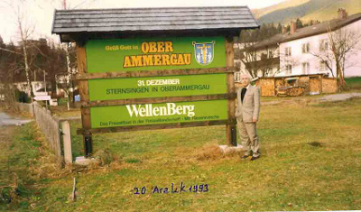
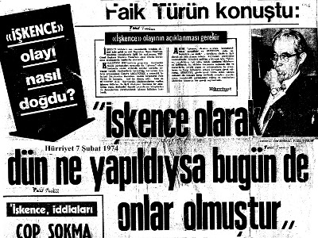
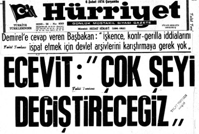
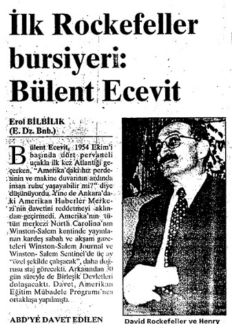

hegemonyasını
sürdürmek için, karşı yöntemler geliştirmek durumundadır.
Bu gerekçeyle gerilla ve partizanlara karşı yürütülen savaşa
“kontrgerilla harekâtı” ya da “gayrı nizami kuvvetlere karşı harekât” denilmektedir.
Çok Yönlü bir Diğer Amerikan Casusluk Örgütü AID
(Bu yazı 5 Haziran 1977 seçimlerinden önce yazıldı.) Antikomünizmi finanse ederek, politika ve çeşitli kuruluşlar ile ve dernekler içinde bir avuç işbirlikçiyle örgütleyen CIA, milli birlik ve beraberlik anlayışını tahribe yönelip,
emperyalizmin değişmez kuralını (böl, parçala, yönet) uygulamaya koymuştur. Bu anlayışla, Amerikan uyducuları
“vatansever”, gerçek milliyetçileri “vatan haini” ilan edip cepheleşenlerin, bugün birbirlerinin ipliğini pazara çıkarma yarışına girmiş olmaları, gerçekte bir düzenin iflasını simgeliyor...
—AID, özel sektör projelerini finanse etmekte ve azgelişmiş ülke iş adamlarıyla ilişki kurmakta, bu kişilerin önde gelenlerinden uluslararası örgütler içinde, kendi amaçları doğrultusunda yararlanmaktadır.
—AID, azgelişmiş ülkelerde “siyasi, iktisadi, sosyolojik, askeri ve yıkıcı faaliyetler” hakkında istihbarat yapmaktadır.
—AID, azgelişmiş ülkelerde ABD yanlısı düzenlerin yaşatılması için, müdahalede dahil olmak üzere, her türlü tertibe başvurmaktadır.
—AID, Washington’da Uluslararası Polis Akademisi’nde özel eğitimden geçirdiği polis şeflerine işkence, sabotaj, adam öldürme yöntemlerini öğretmekte ve gerektiğinde bu işbirlikçileri kendi halkına karşı kullanmaktadır.
—AID, azgelişmiş ülkelerdeki sendikal hareketi kontrol ve finanse etmekte, işçi liderlerinin de Amerika’da özel eğitim (!) görmesini sağlamaktadır.
—AID, azgelişmiş ülke öğrenci, öğretim üyesi ve bürokratlarına burslar sağlamakta ve onları, ABD’de özel eğitimden (!) geçirmektedir.
—AID, çeşitli yöntemlerle yetiştirdiği yerli işbirlikçiler aracılığıyla ABD emperyalizminin çıkarları doğrultusunda

sağı örgütlemek, darbe ve temizlik harekâtları düzenlemek için, terörizm ve siyasi cinayetleri organize etmektedir.
Halkımızın bu kez yapacağı yeğleme, özgürlükleri kısıtlayan hak, hukuk, adalet kavramlarını hiçe sayan, demokrasiyi kabul etmeyen bir düzen getirmek isteyen Amerikan uydu ve işbirlikçisi güçlerle, gerçekten ulusçu özgürlükçü, halkçı demokrasiden yana olan partiler arasında olduğu için tüm seçimlerden daha önemli bir dönemeç noktasına varmış bulunuyoruz...
Kuvvetler Ayrılığı İlkesi
Montesquieu’nün 1748 yılında Kanunların Ruhu (De L’esprit des lois on), adıyla yayınlanan yapıtında; “Zulmün, iktidarın tek elde toplanmasından kaynaklanacağı”, “iktidar kötüye kullanılmadığı takdirde, hürriyetin demokratik idarelerde bulunacağı” ve “kendisine yetki verilen her insanın bu yetkiyi kötüye kullanmaya eğilimli olduğu”
görüşünden hareketle yasama, yürütme ve yargı kuvvetleri arasında, iktidar güçlerini bölüştürerek, demokrasi ve özgürlükleri güvence altına alabilmek için, “kuvvetler ayrılığı” ilkesi önerilmiştir.
Örtülü Faşizm, Anayasa İhlali ve Sahte Davalar
“Dün dündür, bugün bugündür” anlayışı içinde, dün ödünç milletvekili verip grup oluşturmasını sağladığı partiden, bugün milletvekili transfer eden, her çeşit yolsuzluğu örtbas etmek için denetimden kaçma tertiplerine girişen ve yüksek yargı organlarının kararlarını hiçe sayan iktidarların, bu tutumları bile, kanımızca kesinlikle “Anayasayı ihlal suçu”nun tüm unsurlarını taşır.
Dün kontrgerillanın tertiplerine katılmış olanlar, her geçen gün etkenliklerini korumakta ve bazı politik örgütlerden destek almaktadırlar. Bu örgütlerin iktidarları döneminde kontrgerilla uygulamalarının her geçen gün yoğunlaşarak devam etmesi ve bu olaylarda çoğunlukla faillerin yakalanmaması bunun belirgin örneğidir. Anımsatmak isteriz ki, bu tablo, bir ülkede askeri darbe getirmek isteyen emperyalistlerin, faşist tırmanış yöntemlerine tıpatıp uymaktadır. (1980 darbesi öngörüsü.)
Amerikan emperyalizminin, azgelişmiş ülkelerin teorideki düzenlerini pratikte kendi sömürü olanaklarını korumaya yönelik, sivil-asker karması “örtülü faşizm”e dönüştürmede kullandığı yöntemlerden en etken olanı kontrgerilla örgütlenmesidir.
Eğer bir ülkede süreli işkence yapılıyor, yetkili ve sorumlu kişiler bu gerçeği görmemezlikten geliyor, işkence suçlularının ortaya çıkarılması engelleniyor, bir kısım basın ve yayın organları, aynı doğrultuda yayın yapıyorsa, bunlar, bilerek ya da bilmeyerek Amerikan emperyalizminin, o ülkedeki yeraltı örgütü olan “kontrgerilla”ya hizmet sunan birer ajandır.
Kontrgerilla örgütlenmesi içinde çeteleşen ve bu amaçla örgütlenen bir iktidarda, sol görüşün her türünün kökünü kazımak için, “teknik sorgulama” adı altında işkence yapmak, her türlü sabotaj, tedhiş ve teröre başvurmak, sahte operasyonlar düzenlemek, “sahte davalar açmak” ve siyasi cinayet işlemek mümkündür. Çünkü bu tip örgütlenme tüm bu tertipleri düzenlemek olanağını vermektedir.
Asker-Politika İlişkisi
Amerikan emperyalizmi, azgelişmiş ülkelerin silahlı kuvvetlerinin kendi amaçlarına yararlı olduğu sürece, politika yapmalarını da önermektedir. Örneğin; CIA ajanı David Galula’nın önerisine göre: “Politika yok, görevi yalnız düşmanı yenmek olan, bir askerin normal bir savaştaki doğal bir tepkisidir. Fakat ayaklanmaları bastırma hareketlerinde, askerin görevi halkın yardımını kazanmak olduğu için, asker pratik siyasetle meşgul olmalıdır.”
İşbirlikçi İktidarlar
Kokuşan
bozuk
düzen
demokratik
yöntemlerle
değiştirilmeli, sorunlara gerçekçi ve devrimci bir yaklaşımla doğru teşhisler konulmalı, gerekli tedavi yollarına başvurulmalı, bozuk düzenin sorumlusu emperyalist işbirlikçilerinden hesap sorulmalı, toplumsal değerler, sosyal adalet ilkelerine uygun olarak üleştirilmelidir.
Azgelişmiş ülkelerde emperyalistlerce beyinleri yıkanan egemen sınıflar ve onların iktidarları büyük bürokratlarla bütünleşmektedir,
işbirlikçi
iktidarların,
işbirlikçi
bürokratlarla ilişkileri, bir yandan emperyalist sömürü olanaklarını artırırken, diğer yandan da ülke halkı üzerinde, zulüm
ve
baskı
yöntemlerinin
yoğunlaşmasıyla
sonuçlanmaktadır.
Toplumun gerçek ulusçu ve devrimci güç ve sınıfları azgelişmiş ülkelerde milliyetçilik maskesi altında, uluslararası sermayenin bekçiliğini yapan, işbirlikçi iktidarları alaşağı etmek güncel görevi içinde bütünleşmediği sürece, karşıdevrimci güçlere yardımcı olduğunu algılamalı ve üzerlerine
düşen
görevleri
demokratik
yöntemlerle
gerçekleştirmelidir.(1)
Polislere Sosyal Güvenlik Önerisi
Milliyetçi Cephe iktidarı döneminde, çeşitli nedenlerle hayatlarını kaybeden polislerin sayısı, Siyasi Cinayetler gibi, doruğa çıkmıştır. Bu nedenle, polise hayat sigortası sağlanması önerisini yineliyor ve ivedilikle OYAK (Ordu Yardımlaşma Kurumu) gibi, POYAK (Polis Yardımlaşma Kurumu) kurulmasını istiyorum.
Kaynakça ve Açıklamalar
(1) 8 ay süreyle yayımlanan bu iki yazı dizisinde 780
kaynak ve dipnot kullanıldı. “İktidarların Çeteleşmesi” dizi yazısı devam ederken, dergi yayına son verdi...
Körfez Bunalımı Üzerine Talat TURHAN
İktisat Dergisi: EKİM-KASIM 1990
(Güncellendi)
(2011)
Üç ayını dolduran Kuveyt’in Irak tarafından işgaliyle başlayan Körfez bunalımı, olası tüm senaryoların gündeme getirilmesine karşın sürprizlere gebe niteliğini korumaya devam etmektedir.
Vietnam bataklığından ağır bir yenilgiyle çıkan ABD, Arabistan çöllerinde kum fırtınasına yakalanmadan sorunu çözmek istemektedir.
Bunalım “dünya enerji politikası” yakından ilgili görünmektedir Irak ve Kuveyt’ten çıkan petrolün devre dışı kalması bir yandan Dünya’daki tüm ekonomik dengeleri altüst ederken petrol fiyatları tırmanışa geçmiştir. Böyle bir atmosfer içinde Irak’a karşı Birleşmiş Milletler’in (BM) kararları büyük bir çoğunlukla alınmıştır. Kuşkusuz BM, Irak’a karşı aldığı yaptırım kararları ve BM üye devletlerinin buna uymaları BM’de benimsenen kurallar açısından tartışılamaz. Ancak olayların kronolojik gelişimine göz attığımızda ABD açısından “istim arkadan gelsin”, anlayışının
varlığını
da
yadsıyamayız.
Bunalımın
başlamasıyla birlikte ABD olaya müdahale etmiş, daha sonra eylemine uyarlı BM’nin kararları alınmıştır. ABD ve
SSCB’nin bunalıma karşı ortak cephede yer almaları bazı yorumcularca BM bugüne kadar görülmemiş başarısıymış
gibi sunulmaya çalışılmış ve bu konu dünya kamuoyunca da onaylanmıştır. Tüm bu oluşumlara karşın olayda her iki tarafın da uzun ve yakın erimli ortak çıkarlarının varlığı olgusunu da göz ardı etmememiz gerekir.
“İstim arkadan gelsin” mantığıyla hareket eden ve bu tavrına BM kararlarıyla yasal destek sağlamayı beceren (!) ABD’nin dünya jandarmalığına soyunmasının onun emperyalist tutumuna uygun olduğu söylenilebilir.
İdeolojilerin etkilerinin zaman içinde değişebildiği yaşanılarak öğrenilmiş bir gerçektir. Ancak, emperyalizm var olduğu sürece sömürenler ile sömürülenler arasındaki çelişkilerin varlığı da aynı ölçüde doğrudur. Bu, yadsınması olanaksız gerçek karşısında emperyalist ülkelerle ilkesel ve eylemsel birliktelik içine giren “mazlum uluslar” ve onların liderleri, bu tuzağa düşmemekle ancak ülkelerine hizmet edebilirler.
Hatırdan çıkarmamamız gereken, ”İngiliz emperyalizmi şerdir,
ABD
emperyalizmi
ehvenişerdir.
Fakat
unutulmamalıdır ki ehvenişer şerlerin en büyüğüdür” ve
“Bizi mahvetmek isteyen emperyalizme ve kapitalizme” karşı çıkan anlayış “Ulusal Kurtuluş Savaşı”mızın şiarları arasında bulunmasıdır. Her ne kadar 1970’li yıllardan bu yana “İkinci Kurtuluş Savaşı”ndan söz edenlerin sesleri kısılmaya çalışılmışsa da emperyalizme karşı çıkılmadan ne ulusçu, ne enternasyonalist, ne de dindar olunabilir.
Kanımızca Kuveyt’in işgali ABD’ne beklediği bir fırsat vermiştir.
“ABD, Körfez bunalımını kullanıp dünya petrol ve hammadde kaynaklarını tümüyle kontrol edebilecek bir konumda dünya liderliğine soyunmaktadır.”
Eğer bu hedefine ulaşabilirse “mazlum uluslar”ın bağımsızlığı, ulusalcılığı ve onuru paspas gibi çiğnenecek, ekonomileri
emperyalizmin
değirmenine
su
taşıma
konumunda yaşatılacaktır.
— Robert Samuelson, “İkinci Dünya Savaşı’ndan sonra görev, komünizmi durdurmaktı. Bugün ise sanayileşmiş
dünyanın bağımlı olduğu enerji kaynaklarının çıkışını garanti altına almaktır” (1) şeklinde emperyalistlerin niyetlerini açıklamaktadır.
Körfez bunalımına katılmaya hevesli görünen ülkeler, emperyalistlerin çıkarları ile kendilerinkiler arasındaki çakışma ve çatışma ilişkisini hesaba katmak zorundadırlar.
Batının kontrolünde bulunan basın yayın organları, ajanslar, diğer haber ve istihbarat kaynakları emperyalistlerin çıkarları ile “mazlum uluslar”ınkini koşut göstermek için yoğun bir çaba içine girmişlerdir. ABD ve İsrail’in saldırganlığına karşı suskunluğunu koruyan bu çevreler, Saddam’ı canavar gibi göstermekte, onu sık sık Hitler’le özdeşleştirmektedir.
(Günümzde de Kaddafi’ye aynı oyun oynanıyor...) Amacın ABD’nin mutlak liderliği olduğu görülüyor, şöyle ki:
“Soğuk savaşın bitişinden sonraki ilk büyük bunalım, uluslararası denge, serkeş bir ülke tarafından tehdit
edildiğinde, Amerikanın liderliğinden başka bir seçenek olmadığını gösterdi” (2)
“Ben Birleşik Devletlerin ilerde de bir süper güç olmak istediğini düşünüyorum... ” (3)
“Washington’un krize balıklama dalarken sanki soğuk savaş sonrasında da dünya lideri olduğunu gösterme fırsatının çıktığından memnun olmuş bir hali vardır” (4) 1950’lerden bu yana gözü kapalı ABD’ye bağımlılığı ilke edinen iktidarlar ile 12’li darbe dönemleri iktidarlarından ulusal çıkarlara uygun çözümler beklemek gibi kendimizi bir hayale kaptıracak değiliz. Ancak gözü kapalı ABD’nin dümen suyunda olanlara, demokratik yöntemlerin tümünü zorlayarak karşı çıkma en hayati sorun olma niteliğiyle sürekli gündemde tutulmalı ve Türkiye’nin savaşa sokulma tertipleri önlenmelidir.
ABD ve CIA ilgililerinin açıklamalarına bakıldığında Irak’ın Kuveyt’i işgal edeceği, olaydan önce ABD
yetkililerine bildirilmiştir.(5) Bunun yanında günümüzdeki teknoloji uydular aracılığıyla Irak’ın hazırlığını saptamayı olanaklı kılmaktadır. Bunun dışında Irak yönetiminin Kuveyt hakkındaki emelleri ta 1960’lı yıllardan bu yana açıklığa çıktığı gibi, Kuveyt’in yanı sıra Birleşik Arap Emirlikleri’ni de (BAE) ihanetle suçlayan Saddam Hüseyin(6) 1978’de
“Savaşı prenslerin yatak odalarına kadar sokacağız”(7) diyerek niyetini açıklamıştır.
Daha da önemlisi başta ABD olmak üzere tüm silah satan ülkelere yıllarca pazar oluşturan Irak’ın askeri gücünün yaratacağı tehlikenin öngörülmediği varsayılamaz.
ABD, SSCB’nin kendi sorunlarıyla uğraştığı bir dönemde Ortadoğu petrolleri üzerindeki egemenliğini kesinleştirmek için gereksinim duyduğu Kuveyt’in işgaline göz yumduğu düşünülebilir. İşgalin dünyayı olumsuz yönde etkilemesini hesaba katıp BM’yi amaçlarına alet etmesi de söz konusu olabilir.
Eğer böyle ise, uluslar ve devletler dünya tarihinin en büyük şantajıyla karşı karşıya bulunuyorlar demektir...
CIA’nın “Kirli İşler” Bölümü’ndeki anlayışı “Beyaz Saray”a taşıyan “Watergate ve Irangate” skandallarına sebep olan Başkanların entrikaları bütün dünya kamuoyuna yansımıştır. Eski CIA patronu olan George Bush’un “Beyaz Saray”da “kara işler” çevirmeyeceğini kim garanti edebilir?
Sorunların bu boyutta algılanması gereken bir dünyada, Türk dış politikasının dizginleri beceriksiz ve basiretsiz bir iktidar tarafından sorumsuz bir kişinin yönetimine terk edilmiştir. Telefon görüşmeleri ve kapalı kapılar ardında tüm iktidar yetkilileri dışlanılıp yürütülen politikanın, ülkemizin başına ne belalar açacağı belli değildir.
Bu aşamada iktidarın arkasında kamuoyu desteği bulunmaması, etkin güçler ve muhalefet partilerinin savaşa karşı olmaları, güvence olarak görünmekte ise de olası sürprizlerle Türkiye sıcak bir savaşa sürüklenebilir.
Batı Turgut Özal’a destek vermekte ve tüm isteklerini bu destekten yararlanıp somutlaştırmaktadır. Türk halkı daha şimdiden zamların ağırlığı altında ezilirken, iktidar pervasızlık ve vurdumduymazlık içinde gaflet uykusuna
yatmış bulunmaktadır. Batı’nın abartılı bir T. Özal imajına gereksinimi olduğu anlaşılmaktadır. Örneğin:
“Bir petrol ambargosunun başarıya ulaşması Türkiye Cumhurbaşkanı Özal’ın desteğine bağlı.” (8)
“Atatürk’ten beri gelmiş geçmiş en büyük devlet adamı olduğuna çok kişinin inandığı T. Özal Bizans ustalığıyla ülkesinin çıkarlarını korumasını biliyor.” (9)
“Türkler yoksuldur ve Irak boru hattından gelir sağlıyorlardı. Bu nedenle Cumhurbaşkanı T. Özal, hattı kapatarak takdir edilecek bir cesaret örneği gösterdi. Türkler arasında daha da yayılan İslami akım düşünülecek olursa kararı daha da cesur bulunur.” (10)
“Türkiye’nin soğukkanlı ve kararlı bir şekilde boru hattını ve sınırı kapatması, herkesten çok tek bir kişiye yaradı: Cumhurbaşkanı T. Özal’a.” (11)
Frankfurter
Allegemeine
Zeitung
gazetesinde:
“Cumhurbaşkanı T. Özal’ın son on yılın yetiştirdiği ‘tek siyasi kabiliyet’ olduğu, belirtildikten sonra ‘cami sayısı giderek artarken İslam’ın yaygınlaşan nüfuzu, Saddam Hüseyin’e karşı, Batı’yla birleşen hükümetin işini şüphesiz, kolaylaştırmıyor” denilmektedir. (12)
Cumhurbaşkanı T. Özal, “Batı’ya yaranmaya çalışıyor. T.
Özal’ın amacı, Ortadoğu’da kurulacak yeni düzenden kârlı çıkmak”. (13)
Görüldüğü gibi Batı Özal miti yaratmak için yoğun bir propaganda kampanyası sürdürmüş, kuşkusuz sonuçlarından da yararlanmıştır, yararlanmaya devam etmeyi ummaktadırlar.
Oysa Almanya’da yayınlanan etkin bir dergide, (14) “T.
Özal’ın aldığı kararların milletin eğilimlerine muhalif olduğu”
belirtilmiş, T. Özal’ın, “kraldan çok kralcı” olduğuna dikkat çekilmiştir.
T. Özal’ın dış politika çizgisini Saddam Hüseyin’in devrileceği, Ortadoğu haritasının değişeceği fikri üzerine oturttuğu kaydedilen yazıda “T. Özal’ın kapalı kapılar ardında Körfez Krizinin çözümünü aradığı” görüşüne yer verildi.
Dergide T. Özal’ın bu rizikolu politikasının pek anlayışla karşılanmadığı belirtilirken, “Körfez bölgesine asker ve malzeme gönderilmesine Türklerin dörtte üçünün karşı çıktığı” açıklanmıştır.
Batılı kaynakların yorumuna göre Türkiye İslam âlemine ve ülke içinde yükselen İslam’a karşın yeğlemesini Batı’dan yana yapmıştır. Eğer bu gözlem doğru ise, Anavatan Partisi’nden (ANAP) günümüzde ortaya çıkan kanatlar arası sürtüşme çatışmaya dönüşebilir ve böyle bir bunalımda ANAP’ı tarikat şeyhleri bile kurtaramaz. Çıkabilecek bir savaşın “Müslüman-Hıristiyan” çatışmasına dönme olasılığı gündemindeki yerini korumaktadır. Nitekim bu konuda İslam âleminden sesler yükselmektedir.
İran dini lideri Ayetullah Ali Hamaney yaptığı konuşmada görüşünü, (15) “Müslüman milletlerin ABD’nin bölgede kalmasına izin vermeyeceği” ve “ABD siyasetine, planlarına ve saldırılarına karşı gelmenin Allah yolunda cihat ve bu yolda ölenlerin şehit olacağı” şeklinde açıklamıştır. İran’ın üst düzey dini liderlerinden Ayetullah Ali Meşkini ise: (16) “Körfezde bir savaş çıkarsa İran’ın ABD’ye karşı
savaşacağını” açıklamıştır. Bu arada(17) Amman’da Filistin Kurtuluş Örgütü (FKÖ) ve Arap ülkelerinden gelen delegelerin katıldığı “Arap Halk Güçleri Konferansı”nda temsilciler “Amerikan tehditlerine karşı ulusal mücadelesinde Irak’ı destekleyeceklerini” belirtmişlerdir Bunun
gibi,
Cezayir
dini
liderlerinden
Mahfuz
Nahnal(18) “Sorunlarımızı yalnızca kan çözebilir ve İslam düşmanlarına karşı koyabiliriz” derken Tunus dini liderlerinden
Raşid
Ganuşme,(I)
“Biz
uluslararası
entrikalarla, gizli planlarla karşı karşıyayız, etrafımızı yabancı donanmalar çevirmiş ve içimizde hainler var. Eğer Allah yolunda gidersek, bütün bu güçlerin bir örümcek ağı gibi yırtıldığını da görebiliriz”
ANAP iktidarı güçlü bir ikilemin kancası içinde İslami liderlerin yorumlarına göre “ihanet cephesi” içinde yer almış
görünüyor.
Gerçekte izlenen kişisel ağırlıklı dış politika, buram buram ABD hayranlığı ve teslimiyetçiliğinin izlerini taşıyordu.
Ambargo uygulamasının çok kısa sürede Irak’ı pes ettireceği düşüncesini olaylar bugüne kadar doğrulamamıştır.
Sıcak bir savaş durumunda ABD’nin karşısına çıkacak gücü
“tahtakurusu gibi ezip geçeceği” görüşünün de abartılı olduğunu zaman gösterecektir.
Bülent Ecevit(19) ve Necmettin Erbakan(20) Irak’a ilişkin gözlemlerinde ambargonun etkisini kanıtlayacak belirtilere tanık olmadıklarını açıklamışlardır.
İngiltere’de yayımlanan etkin bir dergide(21)“Irak’ın ambargoyu delebileceği ve halkını 6 ya da 8 ay daha besleyebileceği” açıklanmıştır.
Kaldı ki, Irak’ın Kuveyt’in işgalinden yaklaşık bir ay sonra (1 Ekim 1990) karne sistemine geçmiş olması ve en temel ihtiyaç maddesi olan eti karne dışı bırakması bu konuda hazırlıklı olduğunu kesinlikle göstermektedir.
Körfez bunalımının uzamasından ABD ve SSCB’nin ortak çıkarları bulunmakta ve OPEC(II) ülkeleri dolarlarına dolar katmaktadır. Oysa, Türkiye gibi ülkelerde durumun farklı
olduğu peş peşe gelen zamlarla daha bugünden yaşanılarak görülmektedir.
Bir varsayım uğruna elinizdeki kozları ABD’ye teslim edeceksiniz, sonra da zararların karşılanacağını hayal edeceksiniz. Bu politikayı anlamak mümkün değildir.
Olası bir sıcak savaş durumunda Saddam’ın üç kozu bulunduğu açıklandı:(22)
1. Suudi Arabistan’daki petrol bölgelerinin füzeyle vurulmasıyla Batı ekonomilerinin tahribi.
2. İsrail’e füzelerle saldırı, ayrıca Suriye ve Mısır’ın da vurulması
3. Avrupa, ABD ve Japonya’da biyolojik silahlarla terörist saldırılar.
Bunların yanında Irak’ın güçlü ve deneyimli ordusu, üstün zırhlı ve kimyasal silah gücü yanında, nükleer teknolojisinin çok ileri bir aşamada olduğu da bilinmektedir(23-24) [III]
ABD havadan ve denizden baskın tarzında bir saldırıyla Irak’ın hava kuvvetleri, zırhlı gücünü, kimyevi ve nükleer tesislerini, havameydanlarını, ulaşım sistemini ilk aşamada yok etmeyi planlamakta ancak baskına karşın Irak’ın elinde kalacak
güçle
Saddam’ın
vereceği
karşılıktan
da
çekinmektedir. Bu amaçla yapılan yığınak tamamlanmak üzeredir. Kuşkusuz iklim koşullarının da savaşa uygun olması düşünülmektedir. Böyle bir harekâtta Türkiye’nin üslerinden ve kara gücünden yararlanmak için planlar yapılmış olduğu anlaşılıyor:(25-26) [IV]
“Türkiye ile ABD’nin hem askeri hem de istihbarat alanındaki işbirliğini son Körfez Krizi nedeniyle önemli ölçüde genişlettikleri ve Körfez’de olası bir savaş durumunda Türkiye’nin ABD savaş ve bombardıman uçaklarına bu ülkedeki üsleri kullandırmak için NATO görevi görünümü altında izin vermeyi kapsayacağı” (27) ima edilmiştir.
Bunun gibi ABD’nin eski Genelkurmay Başkanlarından Amiral Thomas Mourer(28) “ABD’nin Körfez’deki askeri yığınağındaki temel hedefin, dengeyi kara ordusunda 2’ye 1
oranında Amerika lehine bozacak bir askeri güce ulaşmak olduğu” nu söylemektedir.
Yani Irak kara ordusunun iki misli kara ordusu... Batı’nın bu sayıyı bulmasının tek yolu Türk Silahlı Kuvvetlerinin kullanılmasından geçmektedir. Bu nedenle T. Özal’a övgüler düzülmektedir.(V)
Bazı ABD stratejistlerinden(28) James Schlesinger (ABD
eski savunma bakanlarından), Zbigniew Brzezinski (Carter’ın ulusal güvenlik danışmanı) ve Barry Rubin’in (Yakındoğu Enstitüsü’nden) zamanın ABD’nin lehine işlediği kanısında olmalarına karşın, Richard Perle (ABD eski savunma bakan yardımcısı) Irak’ın nükleer ve kimyasal yeteneğinin tahribini istemektedir. Güvercinler ile şahinler ne düşünürlerse düşünsün Türkiye’nin dış politikadaki ilkesizliği bugünden ekonomisini sarmış bulunuyor. Bu gidişe son verilmelidir...
Tek güvencemiz olası bir savaşa karşı Türk ve dünya kamuoyundan yükselen seslerdir... İnsanlık belki ilkeler adına savaşa sürüklenebilir ama başkalarının çıkarları adına asla...
(29-31) [V]
Kaynakça ve Açıklamalar (1) Newsweek, 20 Ağustos 1990, Ludo Martens, Aktaran: Teori’nin Ekim 1990 sayısı.
(2) “ABD, 200 yıllık tarihi boyunca 379 kez ülke sınırları dışındaki olaylara askeriyle karıştı”, Engin Aşkın’ın Toronto’dan verdiği haber, Milliyet, 2 Ekim 1990.
(3) The Daily Telegraph’ tan aktaran: Cumhuriyet, 10
Ağustos 1990.
(4) Der Spiegel, ABD temsilciler meclisi üyesi Lee Hamilton’un verdiği demeç, Cumhuriyet, 25 Ağustos 1990.
(5) Herald Tribüne, Cato Enstitüsü Dış Politika Bölümü Başkanı Ted Galen Carpenter, aktaran: Cumhuriyet, 25
Ağustos 1990.
(6) Körfez’de barış ve savaş söylentileri , M. Necati Özfatura, Türkiye, 20 Ekim 1990.
(7) “Der Spiegel” den aktaran: Cumhuriyet, 7 Ağustos, 1990.
(8) The Sunday Times’ dan aktaran: Cumhuriyet, 6 Ağustos 1990.
(9) Le Figaro’ dan aktaran: Cumhuriyet, 12 Ağustos 1990.
(10) The European’ den aktaran: Cumhuriyet, 12 Ağustos 1990.
(11) The Daily Telegraph’ tan aktaran: Cumhuriyet, 15
Ağustos 1990.
(12) Frankfurter Allgemeine Zeitung’dan aktaran: Milliyet, 16 Eylül 1990.
(13) Der Spiegel’den aktaran: Cumhuriyet, 19 Eylül 1990.
(14) Der Spiegel’den aktaran: Yeni Asya, 19 Eylül 1990.
(15) Cumhuriyet, 13 Eylül 1990.
(16) Hürriyet, 16 Eylül 1990.
(17) 16’da a.g.g.
(18) Milliyet, 17 Eylül 1990.
(19) Bağdat’ın nabzı, Bülent Ecevit, Milliyet 23 Eylül-1
Ekim 1990.
(20) Körfez Barış harekâtı, Necmettin Erbakan, Milliyet 12-25 Ekim 1990.
(21) The Economist’ten aktaran: Cumhuriyet, 10 Eylül 1990.
(22) Time’ dan aktaran: Cumhuriyet, 2 Ekim 1990.
(23) Saddam, uranyum peşinde, Milliyet, 12 Ağustos 1990, Londra’dan Temuçin Tüzecan’ın haberi.
(24) Journal de Brasil’dan aktaran: Cumhuriyet, 4 Eylül 1990.
(25) L’expres: “ABD kasımda saldıracak”, aktaran: Cumhuriyet, 13 Eylül 1990.
(26) Washington Post: “Savaş planında Türkiye de var”
aktaran: Hürriyet, 24 Eylül 1990.
(27) International Herald Tribune’dan Thomas L.
Friedman’ın haberini aktaran: Cumhuriyet, 14 Ağustos 1990.
(28) “Zaman kimden yana işliyor”, Ufuk Güldemir’in haberi, Cumhuriyet, 28 Ağustos 1990.
(29) Der Spiegel’ den aktaran: Cumhuriyet 25 Ağustos 1990, (Lee Hamilton’un açıklamaları).
(30) “ABD ve Kongre”, Altan Öymen, Milliyet, 21 Ekim 1990.
(31) “ABD ve Fransa’da binlerce kişi sokağa döküldü.
Batıda savaş aleyhtarlığı başladı.”, Cumhuriyet, 22 Ekim 1990.
Güncellenen Kaynakça ve Açıklamalar
(I) Uzun süre yurtdışında yaşamak zorunda kalan Raşid Ganuşme, Tunus’taki halk ayaklanmasından sonra ülkesine döndü.
(II) “Organization of Petroleum Exporting Countries”
(Petrol İhraç Eden Ülkeler Örgütü).
(III) Bu yazı 11 yıl önce yazıldı ama günümüzde Kuzey Afrika ve Ortadoğu’da meydana gelen dönüşümler emperyalist ülkelerin değirmenine su taşırken ekonomimize büyük zararlar veriyor...
(IV) Bu tür yorumların gerçeği yansıtmadığı Körfez Savaşı sonunda görüldü.
(V) 1’inci Tezkere, Türk Silahlı Kuvvetlerin Irak’taki “kirli savaş”a sıcak bakmaması nedeniyle TBMM’den geçmeyince
ABD’nin bütün planları alt üst olmuştur. Bunun karşılığının, ABD’ce Türk Silahlı Kuvvetleri’nin hedef alınıp yıpratılması şeklinde
somutlaştırıldığını
yaşayıp
gördük.
Libya
tezkeresiyle iktidar ABD’ye karşı görevini (!) yerine getirirken Türk Silahlı Kuvvetleri’nden siyaseten rövanş
alındı...
(VI) a- ABD’nin savaş nedeni olarak açıkladığı “Irak kitle imha silahları”nın mevcudiyetinin yalan olduğu ortaya çıktı.
Bu gerçek ABD emperyalizminin içyüzünü daha da açığa çıkardı.
b- ABD’nin Irak’ta ki vahşet ve katliamına karşın ülke halen istikrara kavuşamadı.
c- ABD, Deniz ve Hava kuvvetlerindeki teknolojik üstünlüğüne karşın Kara Kuvvetleri’ni oluşturan Hispanik çapulcularla işgali idame ettiremediği için Irak’ı terk etme kararı aldı.
d- İncirlik üssünün kullanılmasına izin veren gaflet içindeki politikacılar, ABD’nin Kuzey Irak’ta uydu bir devlet kurulmasına katkıda bulundular. O günden beri “Kuzey Irak Kürt Yönetimi” her manada PKK’ya destek vermektedir.
Sorun yaratıp sonra da onunla mücadele etmek politika olabilir mi?
Emperyalizmin Örgütleri ( İktisat Dergisi, Sayı 132, Şubat 1991)
(Güncellendi)
(2011)
Emperyalist ülkelerin sömürdükleri ülkelerdeki çıkarlarının sürekliliğini sağlamak amacıyla çok değişik yöntemlere başvurdukları bilinen bir gerçektir. Bu bağlamda “Zenginler Kulübü”(1) adı altında zaman zaman bir araya gelen kapitalist ülke liderleri önemli yönetsel kararlar almakta ve saptadıkları doktrinleri emirlerindeki örgütlerle dünya genelinde uygulamaya koymaktadırlar. Genellikle sömüren ülkeler ile sömürülen ülkeler arasındaki ekonomik ilişkiler Dünya Bankası, IMF, OECD vb. örgütlerce düzenlenirken ülkemizin askersel kontrolü NATO doktrinlerine uyarlı olarak sağlanılmakta, kültürel açıdan politikacılar, bürokrasinin her iki kanadı, sendikacılar, öğretim elemanları ve lise düzeyine kadar öğrenciler(2) değişik burslarla genellikle ABD’ye çağrılmakta
ve
indoktrine
edilerek
ülkelerine
gönderilmektedir.
Amerikan istihbarat örgütlerinin (NSC, NSA, CIA, DIA, AID, DEA(3) vb.) yerli istihbarat örgütleriyle ilişkisi gün yüzüne çıkmış bulunuyor.
Bu anlamda ABD’nin tüm kirli işlerini CIA’ya yüklemekle asıl hedefi göz ardı etmek gibi bir yanılgıya düşmüş oluyoruz.
Bu bağlamda AID (Uluslararası Kalkınma Ajansı, Uluslararası Kalkınma İçin Yardım, Uluslararası Gelişme Örgütü, Amerikan İktisadi İşbirliği Teşkilatı vb. adlarla
anılıyor) de CIA’nın gizli işlerine paravanlık yapmaktadır.
Oysaki bundan önce yayımlanan yazılarımda da(4) çok yönlü ve tehlikeli bu paravan casusluk örgütünün işlevinden söz etmiştim. Anılan örgütün gerek dünyada ve gerekse ülkemizde ipliği pazara çıkartıldığı için, kapatıldığı açıklandı ve bu yöntemle unutturulmaya çalışıldı.
Oysaki AID’in kapitalist dünyanın uyduları haline dönüştürülen ülkelere yönelttiği hıyanet eylemleri saymakla bitmez.
Bir gazetede yer alan habere göre Türkiye Odalar ve Borsalar Birliği’nde (TOBB) yapılan törende ABD
Büyükelçisi Abramowitz, özel sektörle aralarındaki ilişkiyi geliştirmelerinin iki ülkenin de yararına olduğunu ifade etmiş, TOBB Genel Başkanı Ali Coşkun da AID’le (Uluslararası Kalkınma Teşkilatı) imzalanan protokol çerçevesinde çalışmaları birlikte yürüteceklerini belirterek “Bu uzman kuruluşun bilgi birikiminden yararlanacağız” demiştir.
Aynı gazetenin diğer bir haberine göre de Abramowitz itimatnamesini sunar sunmaz,(5) ayağının tozuyla Odalar Birliği başkanıyla bir sözleşme imzalamıştır. Sözleşmeye göre Ankara’da kurulacak bir büro ABD’li firmaların Türkiye’de yatırım yapmalarında öncülük edecek, bu firmalar ile bizimkiler arasında ortak yatırım projeleri geliştirecektir.
ABD büyükelçisi bu girişimden duyduğu memnuniyeti:
“Türkiye’de bulunmanın önemli amaçlarından biri doğrudan ABD yatırımlarını Türkiye’ye getirmektir. Bu ek yatırım imkânlarından Türk işadamları da yararlanacaktır...” (6) diye dile getirmiştir.
Anlaşmaya göre, ABD’nin Uluslararası Kalkınma Ajansı (US-AID)(7) Türkiye’nin önde gelen özel sektör örgütleriyle de işbirliği yapacak.
Alıntı yaptığımız haberlerden de kesinlikle anlaşılacağı gibi, Abramowitz’le birlikte AID’ın da Türkiye’deki çalışmalarını sürdürdüğü anlaşılıyor. Aslında dünya halklarına yutturulduğu gibi AID’in kapatılması da söz konusu değildi.
Bugün serbest piyasa ekonomisi adı altında halkımıza dayatılmaya çalışılan modelin itici gücü. Amerikan casusluk örgütünün finansmanıyla palazlanan işbirlikçi sermayedar özel sektörden oluşmaktadır. Abramowitz’in TOBB Başkanı Ali Coşkun’la imzaladığı anlaşma bu işbirliğini daha geniş bir alana (orta ve küçük büyüklükteki işyerlerine [KOBİ]) yaymak için yapılmaktadır. Bu yolla işbirlikçi özel sektör, tabanını daha geniş bir alana yayıp ekonomik sömürünün altyapısı güçlendirilmeye çalışmaktadır.
Uzun bir süreç içerisinde örgütlenen işbirlikçi sermayenin özellikle 80’li yıllardan sonraki iktidar üzerinde söz sahibi olduğu ve ABD yanlısı partilerin iktidara gelmesi ve kalması için destek sağladığı günümüzde daha da açıklığa kavuşmuş
bulunmaktadır. Özellikle 12 Eylül darbesinin lideri Kenan Evren’in bir işadamının talimatına itibar ettiğini itiraf etmesi(8) üzerinde önemle durulmalıdır.
AID’in çok yönlü ve etkili bir casusluk örgütü olduğundan söz etmiştik. Nitekim ev sahibi ülkelerde bir yandan işbirlikçi özel sektör yetiştirirken, diğer yandan sarı sendikacılığı örgütlemekte ve finanse etmektedir.(9)
CIA Ajanı Philip Agee, AID’in CIA’ya paravanlık görevi yapmak amacıyla kurulmuş bir Amerikan casusluk örgütü olduğunu ifade etmektedir.(10)
Bu örgütün azgelişmiş ülkelerde yüklendiği görevlerden bazıları şunlardır:
Özel Sektörle İlişki ve Ekonomiyi Yönlendirme: AID, azgelişmiş ülkelerin ekonomilerini emperyalist metropollerin gereksinmeleri doğrultusunda düzenleme amacını güttüğü halde “yoksulluğa karşı uluslararası işbirliğinin
somut
belirtileri
olarak”
gösterilmeye
çalışılmaktadır.(11)
Oysa, gerçekte güdülen amaç, diğer AID görevlerinin başarılması için, ekonominin özel sektör kesimine egemen olmak, azgelişmiş ülkelerin işadamlarıyla ilişki kurmak ve onları örgütlemektir. AID, bu manivelayı kullanarak, iktidarlar üzerinde egemen olmaktadır.
“Sınai Kalkınma Bankası”nın yabancı kökenli sermayesi,
“Avrupa Kalkınma Bankası, Uluslararası İmar ve Kalkınma Bankası (IBRD), Amerikan Kalkınma Teşkilatı (AID) ve International Finans Cooperation (IFC)” örgütlerinin katkılarından oluşmaktadır.
AID’in de iştirakçisi olduğu bu banka özel sektör projelerini finanse etmektedir. Bilindiği gibi, 12 Mart 1971 Muhtırası’nın amaçlarından saptırılmasında ve 1961 Anayasası’nın geriye doğru değiştirilmesinde, önemli katkıları bulunan dönemin genelkurmay ve cunta başkanı Org. Memduh Tağmaç şimdi bu bankada yönetim kurulu üyeliği yapıyor!..
AID, “Karadeniz Bakır İşletmeleri”ne el atmıştır. Bu konuda yapılan Senato araştırmasında “ABD’den sağlanan kredilerin
ulusal
çıkarlarımıza
aykırı
olduğu”(12)
saptanılmıştır.
“Dünyanın en büyük tröstlerinden biri olan CORN Product Company’nin yüzde 60 hisseye sahip olduğu, Türkiye’deki Bemis şirketinin işlerinin büyük ölçüde AID tarafından takip edildiği öğrenilmiştir.” Bemis şirketinin memurları, mısır üreticisi köylere teker teker gitmekte, köylerde “grup reisi(!)”
olarak tanınan kişilerle ilişki kurmaktadır. (Bu “grup reisi”
terimini vurgulamak isterim, çünkü ileride üzerinde duracağız.) Amerikan Yardım Örgütü AID’in, Türkiye’deki yöneticilerinden Dr. Edward Pice, Bemis şirketinin çalışmalarıyla doğrudan doğruya ilgilenmektedir...
Köylülere teknik yardım sağlamak şeklinde gelişen bu kampanyayı yine AID’den Mr. Parker yönetmektedir.
Eski CIA ajanı Philip Agee CIA Günlüğü adlı yapıtında,
“Özellikle geri kalmış ülkelerde –Uluslararası İşbirliği Kurumu (eski AID)–, CIA için tam bir paravana görevi yapar” dedikten sonra “uluslararası tarım ve müttefik işçiler federasyonunu, gerillaların köylerde üslenmesini engellemek için kullandıklarını” eklemekte ve “kırsal bölgede yaşayan köylülerin akıllarının çelinmesini önlemek en önde gelen amaçlarımızdandı” demektedir.
Türkiye’de 1972’den bu yana Türk-İş, AID yerine Asya-Amerika Hür Çalışma Enstitüsü’nden (AAFLI) yardım almakta ve işçi liderlerinin eğitimi de bu örgüt tarafından sağlanmaktadır.
AAFLI Türkiye temsilcisi Emanuel Boggs’un CIA ajanı olduğu saptandığından yerine bir başkası gönderilmiştir.
CIA’nın, Türk tarım işçilerinin sorunlarıyla da ilgili olduğunu, Türk-İş’e müşavirlik yapan CIA ajanı Emanuel Boggs’un Haziran 1976’da Tarım İş Sendikası’nın Adana’da düzenlediği Tarım İşçileri Eğitimi Semineri’ne katılmasından öğreniyoruz.
Azgelişmiş Ülkelerde Her Konuda İstihbarat Yapmak AID, Amerika’da özel beyin yıkama eğitiminden geçirilen ve işbirlikçi yapılan ajanların yönetiminde, azgelişmiş
ülkelerde örgütlediği legal ve illegal örgütlerle; bunlar aracılığıyla çeşitli yöntemlerle ikinci derece ajan yapılanlar ve antikomünizm oltasına takılan kişilerle, diğer sağcı örgütlerden de yararlanarak ABD adına istihbarat çalışmalarını sürdürmektedir.
Bu istihbarat “siyasi, iktisadi, sosyolojik, biyografik, askeri ve yıkıcı faaliyet” alanlarını kapsamaktadır.
FM 30-31 A işaretli Amerikan talimnamesinde bu istihbaratların ayrıntıları açıklanıyor.
Örneğin, “Siyasi alanda her ilin, ilçenin ve hatta köyün idaresinde söz sahibi olunması gerekir” denilmektedir (Kuşkusuz mısır ekilen bir köyde, en çok mısır üreten kişi, kilit adamdır ve “grup reisi (!)” adıyla tanımlanan bu tip kişilerle, çeşitli yollarla ilişki kurulmaktadır. Bu ilişkinin bir türü yukarda açıkladığımız Bemis şirketi örneğinde verilmiştir.)
Kaldı ki, FM 31-15 işaretli Amerikan talimnamesinde bir yeraltı örgütü şeması verilmekte ve bu örgütün köylere kadar, istihbarat, tedhiş ve sabotaj yapmak amacıyla örgütlendiği de gösterilmektedir.
Yani, CIA ve AID azgelişmiş ülkelerin her anlamda köyüne dek girmiş bulunmaktadır.
FM 30-31 A işaretli Amerikan talimnamesinde istihbarat toplamak için her türlü kaynaktan yararlanılacağı, özellikle
“siyasi partilerde istihbaratın temel görevlerinden biri” olduğu ve istihbaratın Amerikalı görevlilerden oluşan Ülke Ekibi (HC) tarafından sağlanacağı da belirtilmektedir.
“Ülke ekibi: Bu genellikle bir elçi olan ABD diplomatik misyonunun şeflerinden biri tarafından idare edilir ve ilgili bulunan ABD dairelerinin ya da ajanlıklarının en büyük ajanlarından oluşur. Buna Dışişleri Bakanlığı, ABD Merkezi İstihbarat Servisi (CIA), Uluslararası Gelişme Ajanlığı (AID) üyeleri, Savunma ataşesi, diğer kilit personel ve danışman ya da yardım programının en büyük askeri yetkilisi de dahildir”
denilmektedir.
Faşist Yeraltı Örgütlerinin Kurulması, Anarşinin Organizasyonu ve Darbe Düzenleme
Azgelişmiş ülkelerde, Amerikancı iktidarları yaşatmak için, Makyavelizm’in en iğrenç örneklerini veren Amerikan emperyalizmi
uyguladığı
bu
yöntemleri
“kurtuluş
savaşları”nın önlenmesinde de kullanmaktadır. Genellikle, kurtuluş savaşları gerilla savaşı şeklinde yürütüldüğünden, Amerika geliştirdiği yöntemlere “kontrgerilla” adını vermektedir. Bu aynı zamanda ABD yanlısı iktidarların
seçimle iş başına gelme şansının kalmadığı saptanıldığında, terörist eylemler (banka soygunu, bombalama, adam kaçırma, uçak kaçırma ve siyasi cinayetler) vb. düzenleyip, sosyal ve politik ortamı etkilemekte, faşist askeri dikta rejimlerinin kurulmasını sağlamaktadır. 12 Mart 1971 Türk halkının eriştiği bilinç düzeyi nedeniyle yarı kalmış bir faşist müdahaledir.
Bu
gibi
durumlarda,
“Temizlik
Operasyonları”
düzenlemekte ve daha önce, azgelişmiş ülkelerin istihbarat örgütleriyle birlikte çalışan CIA ve AID ajanlarının da katkısıyla fişlenen kişiler, çeşitli yöntemlerle etkisiz hale getirilmektedir.
Bu mekanizmanın çalışması için ACC (Area Control Center) adı verilen bir örgütün faaliyete geçirilmesi gerekmektedir. Bu gereksinme ise ancak, sıkıyönetim ilanı ve olağanüstü hal ile sağlanmaktadır. FM 31-16/ Counterguerilla Operations
(Kontrgerilla
Harekâtı)
adlı
Amerikan
talimnamesinin 33’üncü sayfasındaki şemada, ACC’yi sıkıyönetim komutanlarının temsil ettiği görülmekte ve böyle bir örgütlenme içinde CIA ve AID ajanları da görev almaktadırlar. (Şema bölümün sonundadır.)
ABD’nin yardım ettiği 82 ülkede, ABD eğitim sistemi ve örgütlenmesinin tümü aynen benimsendiğine göre, azgelişmiş
ülkelerin sıkıyönetim komutanlarının CIA ve AID ajanlarıyla birlikte çalıştıklarını bu belgeler karşısında kesinlikle iddia edebiliriz.
Polis Yetkililerinin Özel Eğitimle Beyinlerinin Yıkanması ve İşkence Yöntemlerinin Öğretilmesi
AID, Washington’da Uluslararası Polis Akademisi’ni kurmuş ve finanse etmektedir.Akademiyi 25 yıldan beri CIA kontrolü altında tutmakta ve 87 azgelişmiş ülkenin polis şeflerini özel eğitime tabi tutmakta, onlara teknik sorgulama yöntemlerini (işkenceli sorgulama) öğretmekte ve onların beyinlerini yıkamaktadır.”
Eski CIA ajanı Philip Agee’nin CIA Günlüğü adlı yapıtının ilgili bölümünü aşağı çıkarıyorum (cilt 2, s. 820):
“Amerikalar Arası Polis Akademisi Panama Kanal Bölgesinde Panama merkezi tarafından kurulan eğitim okulu, Washington’a taşınarak Uluslararası Polis Okulu adını almıştır. Mali açıdan AID tarafından desteklendiği halde CIA denetimindedir.
Örneğin, Uluslararası Polis Akademisi kurs programlan arasında, ‘patlayıcı maddelerle suikast düzenleme ve patlayıcı
maddelerin
hazırlanması,
boş
vakitleri
değerlendirmek için (!) sessizce adam öldürme (bıçaklama, boğma vb.) plastik ve elektrikli bomba hazırlama ve mayın döşeme çalışmaları’ bulunmaktadır.” (13) Yasalarımızın polis örgütüne yüklediği görevlerin önde geleni, vatandaşın can, mal ve ırz emniyetini korumak olduğu halde, Amerika’da azgelişmiş ülkelerin polis yetkililerine suikast
düzenleme,
sessiz
adam
öldürme
neden
öğretilmektedir?
Dün ve bugün adı işkenceci olarak çeşitli olaylarla kamuoyuna yansıtılan polis yetkililerinin, Washington’da Uluslararası Polis Akademisi’nde eğitim görüp görmedikleri de saptanmalıdır.
AID azgelişmiş ülkelerin siyasi polisini, Amerikan emperyalizmine hizmet ettiği ölçüde dolarlarla beslemekte; araç gereç gereksinimini karşılamakta; işkence yerleri ve hapishanelerin yapılmasını finanse etmekte ve işkence araçları sağlamaktadır.(14)
Örneğin, Senatör Edward Kennedy’nin Senato’da yaptığı bir konuşmada, ABD’nin AID aracılığıyla Güney Vietnam siyasi polisine para verdiğini söylemiş ve bu açıklama Kongre üyesi Michael Clare tarafından doğrulanmıştır. Clare’den, “5
yıl içinde Güney Vietnam siyasi polisine 2,5 milyarlık bir ödeme yapıldığını ve Morrison firmasınca Güney Vietnam’da
‘Bahriye kışlası’ adı altında, siyasi suçluların hapsedilmesi için tecrit hücreleri yapıldığını ve ABD dolarlarıyla beslenen işbirlikçi 120.000 Güney Vietnamlı siyasi polisin, ülke halkının üçte ikisini fişlediğini” öğreniyoruz.
Sarı Sendikacılığın Örgütlenmesi, İşçi Liderlerinin Eğitimi ve Finansmanı:
AID, azgelişmiş ülkelerdeki sendikal hareketleri kontrol etmekle, örgütlemekte, sendika liderlerini eğitmekte ve bu amaçla gerekli finansmanı sağlamaktadır.
Türk-İş
bültenlerinde,
AID’den
yardım
alındığı
açıklanmaktadır.
Bugün, Türk-İş ile Amerika arasındaki ilişki AID yerine Asya Amerika Hür Çalışma Enstitüsü’nce (AAFLI) sürdürülmektedir.
Burs Sağlama
AID ajanları azgelişmiş ülkelerde, kendi ölçülerine göre seçtikleri öğrenci ve öğretim üyeleri ile bürokratlara burs sağlamakta, Amerika’da eğitmektedir.
Sağcı Örgütlerin Kurulması, Finansmanı, Anarşi ve Cinayetlerin Organizasyonu
AID azgelişmiş ülkelerde “antikomünizm”i ilke olarak benimsemiş, sağcı kuruluşları örgütlemekte, finanse etmekte ve yönetmektedir. Bu örgütler, “itimat edilir polislerden”
oluşan ekiplerle, gerektiğinde, terörizmi ve siyasal cinayetleri organize ederek, darbe ve temizlik ortamı hazırlamaktadır.
Özetle:
— AID, özel sektör projelerini finanse etmekte ve azgelişmiş ülke işadamlarıyla ilişki kurmakta, bu kişilerin önde gelenlerinden uluslararası örgütler içinde, kendi amaçları doğrultusunda yararlanmaktadır.(15)
— AID, azgelişmiş ülkelerde “siyasi, iktisadi, sosyolojik, biyografik askeri ve yıkıcı faaliyetler” hakkında istihbarat yapmaktadır.
— AID, azgelişmiş ülkelerde Amerikan yanlısı düzenlerin yaşatılması için, müdahale de dahil olmak üzere her türlü tertibe başvurmaktadır.
— AID, Washington’da Uluslararası Polis Akademisi’nde özel eğitimden geçirdiği polis şeflerine işkence, sabotaj, adam öldürme yöntemlerini öğretmekte ve gerektiğinde bu işbirlikçileri kendi halkına karşı kullanmaktadır.
— AID, azgelişmiş ülkelerdeki sendikal hareketi kontrol ve finanse etmekte ve işçi liderlerinin de Amerika’da özel eğitim
— AID, azgelişmiş ülke öğrenci, öğretim üyesi ve bürokratlarına burslar sağlamakta ve onları, Amerika’da özel eğitimden geçirmektedir(!)
— AID, çeşitli yöntemlerle yetiştirdiği yerli işbirlikçiler aracılığıyla ABD emperyalizminin çıkarları doğrultusunda sağı örgütlemek, darbe ve temizlik harekâtları düzenlemek için, terörizm ve siyasi cinayetleri organize etmektedir.
İşçi sınıfının örgütleriyle AAFLI ilişkileri geçmişte olduğu gibi bugün de devam ettiğinden bu mücadelede ulusallıktan söz edilemez.
Türk-İş, CIA, AID, AAFLI ilişkilerinin tüm boyutlarıyla saptanılmasının ulusal çıkarlarımız açısından sayısız yararları vardır. Türk işçi hareketinin doğal doğrultusunda gelişmesi, ancak bu konudaki gerçeklerin aydınlanmasına bağlıdır.
Belgesel açıklamalarımızda görüldüğü gibi Türk ulusu her yönüyle uzun ve sistemli bir uğraş sonucunda ABD
güdümüne sokulmuştur. Bu amaçla “Atatürk ilkeleri” paspas gibi çiğnenmiş ve çiğnenilmeye devam edilmektedir. 12
Eylül’ün (1980) bakan yaptığı bir general Silahlı Kuvvetler’de iken Atatürk konusunda konferans vermekle görevlendirdiği bir subaydan halkçılık ilkesinden söz etmemesini istiyordu. 1970’li yıllarda polis okulunda okutulan bie ders kitabında(16) “devrimcilik ilkesi”,
“ılımlılığa” dönüştürdüğünü 1977 yılında açıklamama karşın(17) yankı bulmaması 1980 darbesiyle dejenere edilip bugünlere gelmemizde herkesin suçu olduğunu düşündürüyor.
Dün Atatürk devrimciliğinin savunmasını yapan politikacılar
günümüzde devletçilik ve devrimcilik ilkelerinden söz edilemeyeceğini itiraf edebilmektedir. Bu koşullar altında tam bağımsızlığı
kimse
ağzına
almaya
bile
cesaret
edememektedir.
Oysaki, ekonomimizin evrelerini incelediğimizde altın yılların devletçilik döneminde yaşandığı görülmektedir. Buna karşılık 1980 yılından sonra ABD ve AB’ye teslimiyet arttığı ölçüde Türk halkının yoksullaşması giderek hızlanmaktadır.
Halkımızın hedefi bu çemberi kırmak olmalıdır.
Kaynakça ve Açıklamalar (1) Başlangıçta “G-7’ler” olarak bilinen katılımcı ülkeler daha sonra Rusya’yı da aralarına alarak “G-8’ler” olmuştur.
(2) AFS, Fullbright, AGEE, Erasmus vb. gibi.
(3) a- Şifre Çözücü, Mustafa Yıldırım, Ulus Dağı Yayınları, 2006
b- Project Demokrasy, Deniz Som, Cumhuriyet, 12 Mayıs 2004.
(4) a- Talat Turhan, “İşçi Sınıfı ve Sınıf Gerçeği”, 7 Gün Dergisi, 16 Şubat, 9 Mart 1977.
b- Talat Turhan, “İktidarların Çeteleşmesi ve Bürokrasi”, 7
Gün Dergisi, 3 Ağustos- 14 Aralık 1977.
c- Talat Turhan, Bomba Davası, 1. Kitap, 1986
(5) “Evren, ABD elçisini kabul etti”, Cumhuriyet, 2 Ağustos 1989.
(6) “Abramowitz hızlı başladı”, Cumhuriyet, 11 Ağustos 1989.
(7) - US-AID’ın askeri darbelerdeki rolü için Doruk Operasyonu (1989, Sorun Yayınları) adlı kitabımın özellikle 152 ve 153’üncü sayfalarına bakınız.
(8) “Kenan Evren’in Anıları”, Milliyet.
(9) “İşçi Sınıfı ve Sınıf Gerçeği”, Talat Turhan, dizi yazı, 7
Gün dergisi, 16 Şubat- 9 Mart 1977.
(10) 20-21 Şubat 1976’da televizyonda yapılan açık oturumda Türk-İş Genel Başkanı Halil Tunç 1952-1961
döneminde işçi eğitimi için Çalışma Bakanlığı ile AID
arasındaki işbirliğini açıklamaktadır.
(11) Philip Agee, CIA Günlüğü, E Yayınları, 1975.
(12) “Azgelişmiş Ülkelerde Kalkınma Sorunu” Yeni Ortam, 15 Ekim 1974.
(13) 11’de a.g.y.
(14) Politika, 15 Nisan 1977.
(15) a- Ayrıntılı bilgi için, dipnotlarda belirtilen, Talat Turhan’ın 7 Gün dergisinde yayımlanan “İşçi Sınıfı ve Sınıf Gerçeği” adlı incelemesine bakınız.
b- Amerikan Harper’s dergisi, Ocak 1975.
c- Franco Solinas, Sıkıyönetim, s. 82-88.
d- Günaydın, 23 Aralık 1975
e- Kemal Yücel, Kontrgerilla, Yar Yayınlan 1973
f- Yeni Ortam, 6 Kasım 1975.
g- “AID, Türkiye’nin sorunlarına katkıda bulunmak için siyasal istikrar bekliyor” Cumhuriyet, 4 Nisan 1977
h- “AID heyeti işadamları ve bakanlık yetkilileri ile görüştü.” Cumhuriyet, 8 Nisan 1977.
(16) Propaganda, A. Faruki Bahşi.
(17) “İşkence, Siyasi Cinayetler ve Güvenlik Örgütleri”
(polisteki yayınların eleştirisi), dizi yazı, Talat Turhan, 7 Gün dergisi, 1977.
Talat Turhan
İktisat Dergisi, Kasım 1992
(1992)
Türkiye Cumhuriyeti’ndeki birçok şey gibi, darbecilik geleneği de Osmanlı İmparatorluğu’ndan miras kalmıştır.
Osmanlı’nın
son
döneminde
baş
gösteren
illegal
örgütlenmeler, İttihat ve Terakki Fırkası çatısı altında toplanmış, “Babıâli Baskını” olarak adlandırılan olayla bu gelenek başlamıştır. Mustafa Kemal ve İsmet Bey’in de o dönemde darbecilerle birlikte olduklarını görmekteyiz. İnönü daha sonraki yıllarda yaptığı bir söyleşide şöyle diyordu:
“Orduda darbe heveslileri tükenmez. Genç subaylar her gün hükümet kurar, hükümet devirirler. Biz de Mustafa Kemal’le, yüzbaşıyken, darbe planları yapardık. Bu olur.
Toplum bir çatışmaya, bir gerginliğe gittiği zamanlarda, bu artar. O zamanlarda supabı biraz açıp tahliye etmek lazım.
Toplum rahatlarsa, onlar da darbe yapamaz.” (1) Mustafa Kemal dehasıyla darbecilikten Kurtuluş Savaşı kahramanlığına yükselmeyi başarmış ve kendi döneminde Türk Silahlı Kuvvetleri’nde (TSK) darbe yapmak düşüncesi hiç kimsenin aklına bile gelmemiştir.
TSK bünyesinde darbe yapmak amacıyla ilk kez başlatılan örgütlenmenin tarihi 1943’tür. Bu örgüt içinde bulunanlardan, Kur. Alb. Cemal Tural(2) (sonradan örgütten ayrıldı), Kur.
Alb. Naci Aşkun,(3) Kur. Alb. Necip San(4) sayılabilir.
Bilindiği gibi, 1943 yılında İsmet İnönü “Milli Şef” unvanını taşıyan bir cumhurbaşkanıydı ve de çok partili döneme geçilmemişti. TSK’nin tümünün koşulsuz olarak İnönü’nün arkasında olduğu söylenegelmiştir. Oysaki, 1943 yılında darbe yapmak için örgütlenenlerin amacı İnönü diktasına son vermekti. 1946’da çok partili döneme geçiş, 1950’de de Demokrat Parti’nin (DP) iktidar olmasıyla bu kişiler amaçlarına ulaştıkları için örgütlerini dağıtmışlardır.
1954’ten itibaren DP’nin diktaya gitme özlemi karşısında da gene aynı amaçla örgütlenen subaylar 27 Mayıs’ı (1960) yapmışlardır. 27 Mayıs’tan önce ABD, bir darbe geleceğinin farkındadır. Yandaşı olan Menderes iktidarını darbeden habersiz kılarak bir anlamda sonunu hazırlamıştır. 27
Mayıs’tan sonra ABD, başlangıçta darbenin ne yanında ne de karşısında olmayı yeğlemiştir. Zaman içerisinde, genç subaylardan oluşan Milli Birlik Komitesi’nin tümüne egemen olamayacağını algılayınca, hareketi parçalamak için yerli işbirlikçilerin de katkısıyla her yolu denemiştir. Tüm bu olumsuzluklara karşın 1961 Anayasası ABD emperyalizminin çıkarlarına ters düştüğü için ABD yanlısı partilerce boy hedefi seçilmiş, 12 Mart 1971 ve 12 Eylül 1980’de tümüyle Amerikan güdümünde 1961 Anayasası ortadan kaldırılmıştır.
Darbecilik geleneğine ABD işbirlikçisi olarak sahip çıkanlar bulunduğu gibi, iktidarın tutumunu beğenmeyen kişiler vatan-millet kurtarma amacıyla yola çıkmakta, sonuçta ABD emperyalizminin çıkarlarına daha fazla hizmet eden bir düzen getirilmektedir.
80’li yıllardan bu yana, darbe tartışmaları Türkiye’nin gündemini oluşturmaktadır. 1989 yılında yine böyle bir tartışma başlamıştı. O zamanki görüşlerimi ayrıntıyla açıklamıştım.(5) Bu kez yeniden ülke gündemine giren darbe olasılığının TBMM Başkanı Hüsamettin Cindoruk başta olmak üzere, toplumun her kesiminde tartışılır hale gelmesi, kuşkusuz “havanda su dövmek” olarak nitelenemez.
Kanımızca, emir-komuta zinciri dışında darbesel bir örgütlenmenin duyumunu alan ilgililer darbecilerin cesaretini kırmak ya da onları hazırlıksız darbeye itmek suretiyle bu tehlikeyi önlemeyi düşünmüşlerdir.
Türk Ceza Kanunu’na göre darbeye teşebbüs suçtur.
İktidarın üzerindeki “devlet üzerinde devlet”,(6) varlığını her geçen gün büyüyerek sürdürdüğünden, iktidar bu zafiyet içerisinde darbe teşebbüsçülerinden hesap sorma yerine, onları korkutmayı, cüretlerini kesmeyi yeğlemektedir.
Aslında askeri darbelerin anavatanı Latin Amerika’dır.
Oradaki darbeleri Simon Bolivar’dan başlayıp Monroe Doktrini’ne, Monroe Doktrini’nden İkinci Dünya Savaşı sonuna kadar, İkinci Dünya Savaşı’ndan da günümüze değin üç ana başlık halinde incelememiz olanaklıdır. Bu türlerden özellikle sonuncusunun Türkiye’yle çok belirgin koşutluğu bulunmaktadır. Çünkü bu dönemde (1945 sonrası) dünya genelinde birkaç istisna dışında tüm askeri darbeler ABD
emperyalizminin çıkarlarına hizmet için düzenlenmektedir.
ABD askeri darbelerin kuramını geliştirip, hegemonyası altına aldığı ülkelere ihraç etmekle kalmayıp bu amaçla Gladio türü yeraltı örgütleri kurup, finanse ederek denetiminde tutmaktadır. Tüm NATO ülkeleri yanında İsviçre, Avusturya ve İsveç gibi ülkelerde de bu tür örgütlerin
varlığı 1990 yılında tüm açıklığıyla ortaya çıkmıştır. Gelişmiş
Batı ülkelerinde komünist bir istilayı ya da iktidarı engellemeye yönelik bu tür örgütler, demokrasi geleneği yerleşmemiş ülkelerde ABD yanlısı askeri darbelerin oluşması için ortam hazırlamak, darbe sonrasında da onu yaşatmak gibi bir işleve sahiptir.
Türkiye’de 27 Mayıs 1960, 12 Mart 1971, 12 Eylül 1980
tarihlerinde üç askeri darbe yaşandı. Bu süreç içerisinde yaşanan, açığa çıkan ya da çıkmayan bir sürü darbe girişimini şimdilik konumuzun kapsamı dışında tutuyorum.
1 Mayıs 1977 günü Taksim’de işçi sınıfına yönelik katliamdan bir gün sonra tanıdığım bir kişi, 5 Haziran 1977
seçimlerinden önce dönemin K.K.K. Org. Namık Kemal Ersun’un darbe yapacağı haberini verdi. Aslında 1 Mayıs şoku nedeniyle sarsıldığım bir dönemde böyle bir haber almış
olmam beni daha da rahatsız etti. Çünkü habere inanmamam için hiçbir neden yoktu.
Beni bilgilendiren kişi Göztepe Yeşilçeşme sokağındaki bir apartmanda Namık Kemal Ersun’un daire komşusuydu. Ve de komşusuyla sıcak ilişkiler içinde bulunduğunu da biliyordum.
Öldüğü için ismini açıklamamın bir gereği olmadığını düşünüyorum.
O dönemde ülkemizde yabancı istihbarat örgütleri at koşturuyor, her darbe öncesinde olduğu gibi “istikrarsızlık dönemini” başlatmış bulunuyorlardı. Hatta Namık Kemal Ersun’un Gaziantep’te bir eve yönelik bir operasyona katıldığını da anımsıyorum.
Böyle bir durumda yapacağım tek şeyin bilgilerimi halkımla paylaşmak olduğu düşüncesiyle Ankara’da yayımlanan 7 Gün dergisinde yayımlanmak üzere “İşkence, Siyasi Cinayetler ve Güvenlik Örgütleri” başlıklı bir yazı dizisi hazırlamak için on gün, günde 20 saat çalışmak zorunda kaldım.
Dizi yazım 10 Mayıs - 27 Temmuz’a (1977) kadar olan sürede
yayınlandı.
Yüzlerce
kaynaktan
yararlanıp
hazırladığım bu dizi yazı o günkü güncelliğinden arındırılırsa günümüzde de geçerliliğini sürdürebilir.
Nitekim beni teyiden bir gazetede önemli bir haber yayımlandı.(7)
Gazetede “Amerikan gazetesine göre Türkiye’de bir darbe önlendi” başlığını taşıyan bu yazı aslında ABD’nin ciddi yayın organlarından sayılan The Christian Slince Monitor gazetesinin 10 Haziran 1977 günlü sayısından alınmıştı:
“İhtilal teşebbüsüne yeni faşist eğilimli Milliyetçi Hareket Partisi’nin (MHP) lideri Alb. Alparslan Türkeş idaresinde aşırı sağcı 200 kadar subay giriştiler. Kara ordusundan kıdemli asgari 3 general de bu teşebbüste yer aldılar. Halen bu subaylar ya nezaret ya da gözaltında tutulmaktadırlar. 2
Haziran’da Cumhurbaşkanı Korutürk’ün tasvibiyle vaktinden önce ve sebep gösterilmeden emekliye sevk edilen K.K.K.
Gen. Namık Kemal Ersun’un...”
Gazetelerde
yer
alan
darbe
savı
olaylarla
da
doğrulanmaktadır. Nitekim mayıs ayı ortalarında Başbakan Süleyman Demirel, muhalefet lideri CHP Genel Başkanı Bülent Ecevit’e yazdığı mektupta: (mealen) “Taksim
Meydanı’nda konuşmaması, Sheraton Oteli’nden yapılacak bir atışla vurulacağı” konusunda uyardı.
Gerçektende “at izi, it izine karışmıştı...”
Bir başbakan, muhalefet partisi liderini koruyamayacak kadar güçsüzdü. Aslında 1 Mayıs (1977) katliamının yabancı ve yerli istihbarat servislerince düzenlenmiş geniş çaplı bir provokasyon olduğu bugüne kadar açıklanmadı. Nitekim olaydan sonra aldığım bir duyuma göre Intercontinental Oteli’nin bir odasına yerleştirilen istihbarat görevlilerinin provokasyonu başından sonuna kadar izlediği anlaşılıyordu.
Görevlilerin (!) amacı olayın faillerini bulmak olmadığı, zaman içinde anlaşıldı. Onların dertleri başka idi.
Görevlendirdikleri ajanların ne ölçüde başarılı olduklarını saptamaya çalışıyorlardı...
Olayı soruşturan savcı ilk duruşmada (mealen), “1 Mayıs olaylarının faili sokaktan toplanan buradaki sanıklar değil, bu olayın meydana gelmesine sebep olan idaredir” dedi.
Kuşkusuz düzen böyle bir savcıya tahammül edemediği için onun yerini değiştirdi.
Söz konusu savcıyla karşılaştığım bir gün, olayı birlikte tartıştık, değerlendirmemiz birbirine koşuttu, sadece oda numarasını yanlış bildiğimi ifade etmekle yetindi.
Aslında deneyimlerime göre komplo teorisi geliştirmiştim.
Örneğin 1 Mayıs’ta 34 kişi yerine 300 kişi katledilebilseydi yukarıda sözünü ettiğimiz darbeye gerekçe oluşturabilirdi diye düşünüyorum.
Bu kanımı 23 Kasım 1991 tarihinde Antalya Kaleiçi’ndeki bir sanat evinde vermiş olduğum bir konferansta dile getirdim. Ertesi gün bir gazetede bu konudaki açıklamalarım yer aldı. Gazetede bana gönderme yapılıp “Askeri darbe 1977’de olacaktı” deniliyordu. (8)
27 Mayıs’tan sonra ABD’nin Türkiye büyükelçisi olan Fletcher Warren’ın gözlemlerine dikkat çekmek istiyorum.(9) Warren’in ilk saptaması “Türk Ordusu’nun darbeci olduğu”
şeklindedir. O günden bugüne yaşanan süreç Warren’ı doğruladığı
gibi,
Latin
Amerika
laboratuvarında
“pronunciamiento” diye tanımlanan askeri darbelerin zincirleme reaksiyonu, oranın pratiğiyle de doğrulanmaktadır.
Bazı çevreler bu konuda tüpten çıkan diş macununun tekrar tüpe sokulamayacağı şeklinde bir tanımlamayla soruna ışık tutmayı yeğlemektedirler; onlar da gözlemlerinde haklıdırlar.
Warren’ın raporuna dönelim. Raporda, 27 Mayıs’tan sonra kurulan Milli Birlik Komitesi “çok genç, tecrübesiz ve üstlendiği misyondan başı dönmüş bir grup” olarak nitelendirilmekte ve “şu andaki işlerimizden biri de, MBK
içindeki kilit kişilerin kimler olduğunu araştırmaktır”
denilmektedir. ABD büyükelçisinin bu sözlerinin yer aldığı raporun tarihi 11 Ağustos 1960’tır. Yani darbeden 2,5 ay sonra bile ABD büyükelçisi MBK içinde adam aramaktadır.
27 Mayıs’a, ABD’nin yerli işbirlikçilerinin karşı çıkmalarındaki temel öğe kanımızca bu hareketin ABD’nin bilgisine karşın onun kontrolü dışına çıkmasıdır.
Warren, MBK hükümetine “ortalamanın üstünde” not verdikten sonra “kabinede ABD’nin bazı yakın dostlarının bulunduğunu, (!) kabine üyelerinin arasında eğitim, ticari ve
ideolojik bağlarla ABD’ye meyletmiş üyeler olduğunu, geçici hükümetin ABD’ye Menderes hükümeti kadar yakın olmayacağını, hükümet içinde ABD’ye karşı şüpheci bir eğilimin var olduğunu” belirtiyor ve kanısını, “Menderes döneminde hiç karşılaşmadığımız ölçüde sıkıntı ve güçlükler yaşayacağız” şeklinde dile getiriyor.
1960’lardan 1980’lere kadar uzanan askeri darbeler dönemine yüzeysel bakıldığında kuşkusuz sayısız gerekçeler bulunabilir. Ama Warren’ın da belirttiği gibi temel neden Türkiye’nin düzeninin her anlamda ABD’nin dümen suyuna oturtulmasıdır. Bu amaçla da ABD’nin kontrolü altına aldığı ülkelerdeki uzun erimli son hedefi, o ülkelerin iktidarlarının, muhalefetinin ve bürokrasisinin sivil ve asker kanadının ABD
işbirlikçilerinden oluşmasıdır. Kuşkusuz bu yargımızı ekonomiden soyutlamak da olanaksızdır. Dünya genelinde sosyalist enternasyonal ütopik bir teoride kalmasına karşın günümüzde kapitalist enternasyonalizm altın çağını yaşamaktadır. Bu amaçla yıllardan bu yana azgelişmiş ve gelişmekte olan ülkelerin ekonomileri dünya kapitalizmine entegre edilmeye çalışılmaktadır. Günümüzde aynı yöntemler dünkü sosyalist ülkeler içinde uygulamaya konulmuştu.
Demokrat Parti (DP) iktidarından bu yana ABD güdümüne sokulmaya çalışılan ülke ekonomisi, Dünya Bankası ve IMF
reçeteleri doğrultusunda birçok kereler operasyona alındı.
Ancak, bunların içerisinde en önemli olanı kanımca 24 Ocak 1980 tarihinde Demirel iktidarınca alınan ekonomik kararlardır. Eğer ABD, Demirel iktidarında bu kararları uygulama gücünü görseydi büyük bir olasılıkla 12 Eylül (1980) darbesine vize vermezdi. Askeri darbe ve ondan sonra kurulan yapay demokratik düzen Türk halkına serbest piyasa
ekonomisi diye yutturulurken ülkemizin, ABD’nin kucağına oturma süreci tamamlandı. Bu olguyu tehlikeye sokacak her girişimin ABD açısından bir darbe nedeni olabileceğini kesinlikle iddia edebiliriz.
ABD ve Batı dünyası yanında Japonya da Türkiye’deki serbest pazar ekonomisinden emin bulunmaktadır. Nitekim Japon İş Konseyi Delegasyon Başkanı Ryoiçi Kavai bu hususu 1989’da dile getirmiştir:
“Türkiye, Ulusal Kurtuluş Savaşı’nı başarmış, tüm olumsuz koşullara karşın bağımsızlığını uzun süre korumuş ve o koşullarda ekonomisini kalkındırmış onurlu bir ülkedir.”
Bu ülkeyi her anlamda bağımlılık batağına itmekte çıkar umanlar ülkemizdeki bugünkü kaosun gerçek sorumlularıdır.
Hiçbir olguyu seçeneksiz düşünemeyeceğimize göre, kanımca serbest piyasa ekonomisini de seçeneksiz olarak dünya halklarına yutturmaya kalkmak aymazlıktır.
1989’da
ABD’de
“Georgetown
Üniversitesi”nde
düzenlenen bir panelde Cezayir, Mısır ve Türkiye için üçlü ekonomik birlik ve çözüm olarak “uluslararası ekonomik ilişkilerde yeni bir model geliştirilmesi” önerilmiştir. Pek yakın bir tarihte serbest piyasa ekonomisi modelinin teorisyeni olan Milton Friedman kendi modelini eleştirirken, ülkemizin iktidarıyla, muhalefetiyle ve bilim çevreleriyle bu modele teslim olması, hıyanet olmasa bile tarihsel bir yanılgı olarak değerlendirilmelidir.
Prof. Dr. Mümtaz Soysal açıklamaya çalıştığım bu olguları 1988 yılında yayımlanan bir makalesinde(10) dile getirmektedir:
“Güney Amerika toplumlarını için için yiyen, kemiren çöküş Türkiye’de de başlamıştır Türkiye’deki kronik darbe tartışmalarının tam şu sırada yeniden başlaması rastlantı değildir. IMF ve onun arkasındaki uluslararası büyük sermaye, Latin Amerika’da gösterdiği büyük başarıyı burada da gösterip Türkiye’yi de darbeler ülkesi durumuna sokmayı başardı... IMF, sosyal güvenliğin zaten zayıf olduğu toplumlarda sosyal güvenlik giderlerinin daha da kısılmasını savunup toplumdaki uçurumları büyütür... Yüzeydeki görüntüler ve yaşanan olaylar ne olursa olsun ortaya çıkan bu bunalım provasının temelinde ekonomik modelin iflası yatıyor.”
Yine o dönemde bir panelde görüş açıklayan Prof. Dr.
Memduh Yaşa, “gelir dağılımı ile sosyal farklılıkların arttığını” belirtmiş ve “uçurumun kenarına geldiğimizi, bir sabah 03.00’te radyodan anlarız” deyince, konuşması, DGM
tarafından soruşturmaya alınmıştır. Yine aynı dönemde
“Business International”ın Türkiye raporunda “Türkiye’nin gündeminde ya kalıcı demokrasi ya da yeni bir askeri darbeye gidiş var” deniliyordu.
Bilindiği gibi, ülkemizdeki darbe tartışmaları 60’lı yıllardan günümüze değin süregelmektedir. Ekonomik çöküş ve yönetsel kargaşa sürdüğü sürece de devam edeceğe benzemektedir. Sırası gelmişken Turgut Özal’dan söz etmek istiyorum. Özal 1986 yılında “Alternatifimiz yoktur” dedikten sonra, “İki yılda tahmin edilemeyecek kadar dış politikada sonuç aldık. Bir Kıbrıs meselesi eskisi kadar gündemde midir?” diye soruyordu ve “Özal enflasyonu indiremezse gider diyorlar. Özal inşallah enflasyonu bu sene hep aşağıya çekecektir. Çünkü şartlar buna müsait ve önümüzdeki sene
inşallah yılbaşı sonu itibariyle (1987’yi kastediyor) enflasyonun yüzde 25 civarına geleceğini kuvvetle ümit ediyorum” diyordu.
Politika ileriyi görme sanatıdır. Bu anlamda en başarılı politikacı, öngörülerinde yanılmayan kişidir. Bu anlayışla T.
Özal’ı
değerlendirirsek
tüm
görüşlerinin
zamanla
doğrulanmadığını görmekteyiz.
Özellikle enflasyon konusundaki süregelen yanılgısının bugün Türk toplumunun her alanını etkisi altına alan kaosun temel nedeni olduğunu düşünüyorum.
1989 yılında yayımlamış olduğum bir yazıda o gün gündemde bulunan “Darbe olasılığı”nı işledim. Daha sonra da bu yazıyı “Doruk Operasyonu” adlı yapıtımda yayımladım...
(11)
12 Mart 1971 yarı askeri muhtırasal darbesine karşı ilk direnecek organ TBMM olmasına karşın o dönemde başbakan olan Süleyman Demirel’in darbecilerle işbirliği yapmaya kalkışması kendi açısından gerekçesi ne olursa olsun demokratik yanılgıların en büyüğüdür.
1973 yılında 12 Mart 1971 darbesiyle ilgim dolayısıyla idam istemiyle İstanbul Sıkıyönetim Askeri Mahkemesi’nde yargılanırken sorgum sırasında 12 Mart darbesinin arkasında CIA’nın bulunduğunu duruşma tutanağına geçirten ilk kişiyim. İki yıl sonra bir gazeteye yapmış olduğu açıklamada dışişleri eski bakanı İhsan Sabri Çağlayangil(12) beni doğruladı. Daha sonra çeşitli kaynaklar bu gerçeği teyit ettiler.
12 Eylül 1980 darbesi üzerine fazla konuşmaya gerek yok.
Bu darbenin “Made in USA” damgalı olduğu birçok
kaynaktan açıklandığı gibi bütün dünya da bu gerçeği kabul etmiş bulunuyor.
12 yıl CIA ajanlığı yaptıktan sonra insanlığa karşı suç işlediğinin bilincine varan CIA ajanı Philip Agee yapmış
olduğu hıyanetleri “CIA Günlüğü”(13) adlı iki ciltlik kitabında toplamıştı. Aynı kişi 1988 yılında Türkiye’deki askeri darbelerde CIA’nın rolü için şunları söylemektedir:
“Faşizmin en büyük destekçisi CIA dır. Yunanistan, Türkiye, Güney Kore, Filipinler, İran, Endonezya’da CIA duruma müdahale edip faşizmin zaman zaman yerleşmesini sağlamıştır. CIA Türkiye’de siyasi baskı ve işkence yapılmasında da başrolü oynamıştır.”
Fazla söze gerek var mı?
Kaynakça ve Açıklamalar (1) Abdülkadir Selvi, Yeni Asya gazetesi, 1 Ekim 1992.
(2) Eski K.K.K. ve Gnkur. Bşk., orgeneral.
(3) Eski MİT başkanı, Tümgeneral.
(4) Eski Emniyet Genel Md. ve Başbakanlık müsteşarı.
(5) Talat Turhan, Doruk Operasyonu, Sorun Yayınları, 1989.
(6) Talat Turhan, Özal Savaş, Terör ve Kontrgerilla, Tümzamanlar Yayıncılık, 1992.
(7) Hürriyet, 12 Haziran 1977.
(8) Milliyet, 25 Kasım 1991, Hikmet Yıldız’ın haberi.
(9) Hürriyet, 27 Mayıs 1980.
(10) Milliyet, 4 Nisan 1988.
(11) Doruk Operasyonu, Talat Turhan, Sorun Yayınları, 1989.
(12) Politika gazetesi, 12 Mart 1976.
(13) CIA Günlüğü, Philip Agee, E Yayınları, Eylül 1975.
Emperyalizm ve Darbeler Güngör Gencay’ın Talat Turhan’la yaptığı söyleşi
( Gerçek Sanat Dergisi, Sayı 18)
(Güncellendi)
(2011)
Güngör Gencay: Ülkemiz, 27 Mayıs 1960, 12 Mart 1971 ve 12 Eylül I980’de olmak üzere bugüne kadar gerçekleştirilmiş
üç darbe yaşadı. Bu üç darbeyi birbirinden ayıran temel özellikleri söyleyebilir misiniz?
Talat Turhan: Tabii, Türkiye’nin gündeminde darbeler büyük bir yer işgal ediyor. İnsanları bu konuda düşünceleri açısından üç gruba ayırabiliriz: Üç darbeye de karşı olanlar; 12’li darbelere karşı olup da 27 Mayıs’tan yana olanlar; bir de bu konuda ikircikli olan çevrelerden söz edebiliriz.
Ben şahsen bu gruplar içerisinde, belki bazı çevreler bunu çifte standartlı bir tavır olarak kabul etseler bile, 27 Mayıs darbesinden yana, 12’li darbelerin yüzde yüz karşısında bir insan olarak kendimi konumlandırıyorum. Bu, darbeler içinde yaşayıp vardığım bir kanıdır. Bir TV programına çıkmıştım.
Karşımda Adalet Parti zihniyetinin önde gelen temsilcisi bir kişi vardı. Bana, “Tabiî siz 27 Mayıs’tan yararlandığınız için, 27 Mayıs’ı tutuyorsunuz” gibi çok ucuz bir eleştiri getirdi.
Oysaki bu çok cahilane bir eleştiriydi. Aslında 27 Mayıs’tan çıkarı olmayan, hatta bundan büyük ölçüde zarar gören bir kişi olmama karşın, bu kanımı koruyorum. 27 Mayıs’ı tutuyorum. 27 Mayıs’ı tutmam demek 27 Mayısçıları tutmam demek değildir. Bir kere bunu vurgulamak isterim. 27
Mayıs’çılar aslında 13 Kasım 1960’ta bölündüğünde, tüm
yasallığını yitirmiş ve bütünlüğünü kaybetmişti. Onun için bu boşluğu, “Silahlı Kuvvetler Birliği” (SKB) adlı, ordu mensuplarından oluşan bir örgüt doldurdu. Ben de o örgüt içerisinde Türkiye’nin demokrasiye gidiş sürecinde katkıda bulunmak üzere yer aldığımı yapıtlarımda açıklıyorum. 27
Mayıs’ın, o günün koşulları içinde bir zorunluluk olduğunu kabul ediyorum. 12’li darbeler demokrasiyi ortadan kaldırmak için gündeme gelmesine karşın, 27 Mayıs, tıkanmış
olan demokratik yolu açmak amacıyla yapılmıştır. Bunun için ucuz, duygusal eleştirilerden çok gerçeklere ulaşmak isteyenlerin, binler, on binlerce sayfa tutan Yassıada Duruşma Tutanakları’nı okumaları gerekir. Oysa, bu çaba içine giren kişilere rastlamadım. O zaman önyargılarla bu konu eleştiriliyor. Tutanakları okuduğumuz zaman şunu görüyoruz.
Demokrat Parti iktidarı ve önde gelenleri, kesinkes dikta kararındalar ve bu karar içinde de muhalefet liderini ortadan kaldırmak istiyorlar. Bu konuda girişimler de oldu.(1) Demokrat Parti (DP) liderlerinin baktığımız zaman Cumhuriyet
Halk
Partisi’ni
(CHP)
kapatmak
ve
milletvekillerini hapse koymak amacını taşıdığını görüyoruz.
O zaman ana muhalefet partisini tümüyle ortadan kaldıran bir anlayış, partisel bir dikta yönetimi söz konusuydu. Bu durumu değiştirecek demokratik başka bir seçenek olmadığından, bu yolu açacak bir güce ihtiyaç vardı. Türk Silahlı Kuvvetleri bu işlevi üstlenmiştir aslında. Yani diktaya giden bir düzeni demokratik rayına oturtmak gerekiyordu. Çağdaş bir Anayasa yapmak suretiyle Türkiye’nin önü açılmıştır. Bu açılan yoldan sonra ülkemizdeki yeni fikirler filizlenmiş, gelişmiştir. Yani sol Anayasa’nın getirmiş olduğu özgürlük ortamında gelişme olanağı bulmuştur.
1961 Anayasası olmasaydı 1965’li yılında Türkiye İşçi Partisi, TBMM’ye 15 milletvekili sokamazdı. Aslında karşıdevrimci güçleri en çok rahatsız eden olgu da budur.
Belki diğer sol fraksiyonlar karşıdevrimcileri bu kadar rahatsız etmemiştir. İşçi Partisi’nin güçlenme olasılığı 12
Mart 1971 darbesini tetiklemiştir.
Şili’de Allende örneğinde olduğu gibi, solu iktidara getirip de alaşağı etmektense, bunu daha fazla geliştirmeden önlemenin yolları arandı. CIA, 12 Mart darbesinin önünü açtı.
12 Mart, Türkiye’deki solu ortadan kaldırmayı hedefledi.
Cunta başı Org. Memduh Tağmaç misyonunu (!) gizlemiyor:
”Türkiye’deki sosyal uyanma, ekonomik gelişmeyi aştı.”
Tağmaç, “Sosyal uyanmayı bastırma” emrini (!) almış... Bu durum emperyalist kaynakların, özel savaş yöntemlerinde
“Temizlik
Operasyonu”
diye
tanımlanır.
Cuntacılar
emekçilerin alın terini emperyalist tekellere peşkeş çekme görevini üstlendiler.
27 Mayıs işçi sınıfına tepeden inme haklar verdi.
Anayasayla verilen bu hakları uygulamak, dönemin sosyal güvenlik bakanı olan Bülent Ecevit’e düştü. O da “emekçiden yana” görünümlü karizmasını, siyaset arenasında bugüne dek sürdürme becerisini gösterebilmiştir.
Diğer darbelere gelince: Kabul etmek gerekir ki, dünyadaki bütün darbelerin ardında gizli servisler var. 27 Mayıs harekâtında ardında CIA vardı. Ancak, darbeden haberdar olmak ile yönlendirmek farklı... Bugünkü teknoloji içinde gizli servislerin dünyada olan bitenlerden haberdar olmadığını kabul etmek, akla aykırıdır. 27 Mayıs’tan emperyalist güçlerin ve istihbarat örgütlerinin haberi vardı. Ama tedbir almadılar.
Örneğin, Türkiye’yi “küçük Amerika” yapmak sevdasıyla gelen Demokrat Parti (DP) iktidarının başındaki kişiyi kollasalardı, en azından haberdar ederlerdi. İktidar emperyalizme hizmet etme güç ve fonksiyonunu kaybettiği için, yeni bir iktidarın gelmesini uygun görmüşlerdir. Ancak darbeler, emperyalist güçlerin arzu ve isteklerine uymayabiliyor. O zaman darbeyi rayına oturtmak gerekiyor.
27 Mayıs, emperyalistlerin istihbarat örgütlerinin, geleceği tahmin edemedikleri için ellerinden kaçırdığı bir darbedir.
1960–1971 sürecinde, o darbenin emperyalist güçlerin arzusu doğrultusunda rayına oturtulmasına çalışılmış, yeterli olmayınca 12 Eylül darbesine izin verilmiştir.
Güngör Gencay: Yani, emperyalizmin gerek 1960, gerekse 1971 darbesini bildiğini söylüyorsunuz. Ki bu...
Talat Turhan: Hayır, 12’li darbelerin fiilen içinde. 1960’ı biliyor, iktidara haber vermiyor. Aynı Portekiz’deki “Kırmızı Karanfiller İhtilali” gibi.
Güngör Gencay: O zaman şunu sorayım Talat Abi. 12 Mart öncesinde darbenin, ordudaki ilerici subaylar tarafından gerçekleştirileceği söylentileri yaygındı. Buna, an meselesi olarak bakılıyordu. Oysa ki tam tersi oldu. Bu tepetaklak oluşun perde arkasından söz edebilir misiniz?
Talat Turhan: 1960-71 sürecinde Anayasa’nın getirmiş
olduğu hak ve özgürlükler Türkiye’de sol bilincin ışımasını sağladı. Bu ışımanın Silahlı Kuvvetler’e yansımadığını kabul etmek akla aykırıdır. Çünkü Silahlı Kuvvetler de bu toplumun bir parçasıdır. Bu ilerici, devrimci akımlara karşı sıcak bakan gruplar genelde gençlerdir. Onun için de Silahlı Kuvvetler’in genç Subayları içerisinde sola sempatiyle bakan gruplar çıktı.
Bu oluşum emperyalistleri ve işbirlikçilerini tedirgin etti.
Karşı yöntemler geliştirdiler...
Birinci
aşamada:
Silahlı
Kuvvetler’de
(Kara
Kuvvetleri’ndeki) genç ve ilerici kişilerin temizlenmesi aşamasıdır. Aslında o kişilere, ideolojik açıdan bakıldığında, sol kültür ve sol bilinç içinde oldukları söylenemez. Ancak genç subaylar 27 Mayıs’tan sonra Türkiye’de bir şeylerin bozuk olduğunu algılamış, inandıkları liderlerin eylemine takılmışlardır. 22 Şubat 1962’ler, 21 Mayıs 1963’ler bir anlamda
Demokrat
Parti
(DP)
zihniyetine
karşı
dalgalanmalarıdır. Bu dalgalanmaları karşı devrimci güçler kullanmak suretiyle 22 Şubat’ı, 21 Mayıs’ı bahane edip 1.468
Harbiyeli’yi ve birkaç yüz genç subayı tasfiye etmek fırsatını yakalamışlardır.
21 Mayıs 1963 Talat Aydemir başkaldırısını dönemin Milli Emniyet başkanı olan Korg. Fuat Doğu, İnönü’ye bildiriyor.
Aslında, Türk Ceza Yasası’na göre, bir ihtilale teşebbüs etmek ile icra etmek suçu arasında hiçbir fark yok. İkisi de TCK’nin 146/1’inci maddesine giriyor. Ancak iktidar Milli Emniyet’in yapmış olduğu bu ihbarı ciddiye alıp da darbe yapacak kişileri yakalasa teşebbüs hali olsa bile cezalandırılmaları olanaklı kılıyor. Genç Harbiyeli ve subayları temizlemek için harekâtın olmasına göz yumuldu.
21 Mayıs (1963) olduğu gün, Milli Emniyet başkanı İran’dadır. 21 Mayıs olayı bahane edilip Kara Kuvvetleri’nde büyük bir tasfiye yapıldı. Ve de bir yıl Harp Okulu’nu kapatmak suretiyle yüz küsur yıllık gelenek ortadan kaldırıldı.
Yeni bir Kara Harp Okulu ve yeni bir prototip yaratılmaya çalışıldı.
Ancak o dönemde, Türkiye’deki sol bilincin artmasına koşut olarak bu kez de Deniz ve Hava kuvvetlerinin genç öğrenci ve subaylarının sol görüşten etkilendiğini görüyoruz.
Bu subaylar kendilerini 1968 yılında ele verdiler. Şöyle ki: 1968 yılında Hava Harp Okulu bir yıllık yayımladı. Yıllığın adı: Göksenin idi. Yıllıkta adı geçenlerin tümü zaman içinde tasfiye edildiler. Hatta biri (Saffet Alp) Kızıldere’de öldürüldü. Yıllık, bir askeri kurumun kabul edebileceği tarzda hazırlanmamıştı. Belirli bir sol düşünceyi yansıtıyordu. Hatta ilginçtir, dergideki ilk şiir “İsyan” diye başlıyordu. Salih Zeki Yılmaz adlı çok değerli bir yüzbaşı yazmış. İsyanları bastırmak için bütün dünyada çok yoğun çabalar var. İsyan diye başlayan bir anlayışın, tabiî tümüyle temizlenmesi gerekiyordu. Hava Kuvvetleri kesiminde, sol bilincin açığa çıkması Göksenin Yıllığı’yla oldu. “Göksenin Yıllığı”, kamuoyuna yansıdığı zaman, Bugün Gazetesi’ni, Mehmet Şevki Eygi yönetiyordu. Çok ağır suçlamalar içeren makalelerle ihtilali, ”eşşek anırtıları” gibi küçültücü sıfatlarla betimleyerek genç subayları tahrik etti. Bu kez de Deniz Kuvvetleri’nin genç subayları “69’lar Bildirisi” yayımlayıp Göksenin’cilere destek oldular. Aslında, o günlerde havacılar ile 69 Deniz subayı arasında fiziki bir ilişki yoktu. Bu bildiri nedeniyle Silahlı Kuvvetlerin Deniz subayları içinde de bir sol bilincin olduğu ortaya çıktı. O zaman karşı devrimcilerin hedefleri de belli oldu. “Kara Kuvvetlerindeki ilerici kesimi tasfiye etmişlerdi. Sıra Hava ve Deniz Kuvvetlerindeki devrimci kesimi tasfiye etmeye gelmişti.” Nitekim emekli general Ali Elverdi, “12 Mart ordudaki solcuları tasfiye için yapıldı” diyor...
Bu oluşum 12 Mart darbesini tetikledi. Resmi ABD
talimnamelerinde, CIA belgelerinde ve CIA Ajanı Philippe Agee’nin yazmış olduğu kitaplarda “bir darbe nasıl yapılır”
formüle edilmektedir:(2)
“1- Başbakan veya partiyi zayıflatmak için içte ve dışta uygun propaganda çalışmasına başlanılır.
2- Ekonomiyi güçsüzleştirmek için de yurtiçi ve yurtdışında yoğun faaliyet gösterilip, kredi imkânları durdurulur.
3- Politik anarşi çıkarılmak amacıyla siviller arasında özel gruplar kurulup terör ortamı oluşturulur. (3) 4- Bu arada yerli ve yabancı yatırımlar, gerekli güven ortamı olmadığı gerekçesiyle engellenir,
5- Sabotajlar ve sürekli grevler yaptırılarak üretimin ve kazancın düşürülmesi sağlanır.
6- Ülkeden sermayenin kaçmasına yardımcı olunur.
7- Dışarıda yaptırılacak aleyhte propagandayla gelen turist sayısı hissedilir derecede azaltılır. Bütün bunların sonucunda, zorunlu gıda maddelerinde azalma olur. Kuyruklar doğar, böylece toplumda derin bir hoşnutsuzluk oluşur, işsizlik birden fırlar, anarşi yüzünden ölü sayısı gün geçtikçe artar.”
Bu senaryo, birkaç kez seyrettiğimiz filmin aşağı yukarı formüle edilmiş şekli. Darbeler kendiliğinden olmuyor.
Dünyada darbeleri yönlendiren bir merkez var.
Emperyalist güçler bunu formüle etmişler, örgütlemişler.
Teorisini, pratiğini ortaya koymuşlar ve planlı olarak uyguluyorlar. 1918 ile 1981 yılları arasında yaşayan
Amerikalı etnograf ve düşünür Levis Henry Morgan Militarist Demokrasi adlı yapıtında “askeri demokrasi”
terimini ilk kullanan kişidir. Bilimsel açıdan, asker demokrasisi İ.Ö. 9–12 yüzyıllarda Homerik Çağ dediğimiz dönemde Yunanlılar MÖ VIII.-VI. yüzyıllarda Romalılar, daha sonra İskitler, Persler, Normandiyalılar, Germenler tarafından uygulanmıştır. Asker demokrasisi ilk biçiminde sürekli değil, olağanüstü ve geçiciydi. Savaşta uygulanıyordu.
Zamanla kökleşti ve askeri yönetime dönüştü. Yani bu anlamda, tarihsel anlamda askeri yönetim MÖ VI. yüzyıla kadar giden gerici bir yönetim biçimidir.
Ancak, emperyalistler dünyadaki çıkarlarını korumak için yönetimin şekline bakmazlar. Onların anladığı anlamda demokrasi ile çıkarları koşuttur. Emperyalist ülke, kendi çıkarlarına demokrasi gitmediğini algıladığında askeri yöntemi gündeme getirip çıkarlarını garanti altına alır.
Amerikan emperyalizmi askeri darbeleri amacı doğrultusunda kullandı.
İspanyol sömürgeciliğinin el değiştirdiği dönemlerde Güney Amerika’da da büyük bir dalgalanma yaşanıyor. Bu dalgalanmada da genel valiler, sömürge valileri iktidarın tadını aldıktan sonra, iktidarlarını sürekli kılmak için isyanlar, darbeler
yapıyorlar.
Bu
tür
darbeler
İspanyolca
“pronunciamiento diye tanımlanıyor. Amerika, Güney Amerika’daki darbeler geleneğini zaman içinde kurumlaştırıp, bu ülkelerdeki kendi çıkarlarını emniyete almak becerisini göstermiştir. Latin Amerika’daki devrimci darbe geleneğini başlatan Simon Bolivar olup, Bolivya, ismini kurucusundan almaktadır.
Amerika 1900’lü yıllardan itibaren bu anlamda tecrit politikasından vazgeçip “Monroe Doktrini”yle “Amerika Amerikalılarındır” dediği andan itibaren, darbeleri kendi yönlendirmesine almak için, çaba sarf etti. Özellikle İkinci Dünya Savaşından sonra, ilk kez 1946 yılında, Panama’da
“Les Escuades de la Americas” (School of Americas
[Amerikalılar Okulu]) adıyla bir okul açtılar ve bu okulda da Latin Amerika’daki darbeciler yetiştirildi. Okulda darbecilere
“özel savaş kavramını” öğrettiler. Bu okuldan binlerce üst düzey subay, Amerikan çıkarlarına hizmet etmek amacıyla yetiştirilmiş ve Latin Amerika’da yapılmış olan bütün darbelerin liderlerinin de bu okullardan geçmiş olduğunu görüyoruz. Örneğin:
—Gen. Manuel Noriega (Panama eski diktatörü, 1967
mezunu)
—Gen. Leopoldo Galtieri (Arjantin eski diktatörü, 1949
mezunu)
—Gen. Humberto Reyalado (Honduras, 1984 mezunu)
—Gen. Hugo Banzer Suarez (Bolivya eski başkanı, 1961
mezunu)
—Gen. Pinochet (Şili darbe lideri)
—Gen. Videla (Arjantin darbe lideri)
— Robert D’aubusion (Salvador’daki ölüm mangalarının lideri, 1972 mezunu)
Güngör Gencay: Demek oluyor ki geri kalmış ülkelerde gerçekleştirilen her darbe, hatta daha da ileri giderek her
iktidar modeli emperyalist güçlerin bir temel ve taban oluşturmasıyla
ve
onların
istekleri
doğrultusunda
gerçekleştiriliyor. Zaten bakıyoruz, 1947’de Truman Doktrini’yle başlayan yardım sonrasında Türk Ordusu, ABD
Ordusu’na benzetilmeye başlandı. Amerikan silah ve malzemelerini
kullanabilmek
için
askeri
okullarda
Amerikalılar gözetiminde kurslar açıldı. O dönemde iktidarın başında Ulusal Kurtuluş Savaşı’nda önemli rol oynamış bir lider bulunuyordu. Ondan sonra da ülke çıkarları açısından ABD’ye sayılamayacak kadar ödün verildi. Bütün bunları bir aymazlık olarak nitelendiremeyiz herhalde?
Talat Turhan: Türkiye’nin ABD’ye vermiş olduğu ilk ödün, 1947 tarihli ikili antlaşmadır. Ne yazık ki, bu antlaşmada İsmet İnönü’nün imzası vardır. Kanıma göre, Türkiye’yi emperyalizme peşkeş çeken iktidarlar, Atatürk’ün deyişiyle
“gaflet, dalalet ve hatta hıyanet içinde” olmuşlardır. O günden bu yana, her iktidar bu hıyanet olgusuna bir anlamda katkıda bulunmuştur. Somut olarak şunu görüyoruz ki, 12’li darbeler bu katkıyı katmerlendirmiştir. Olaylara kriminolojik açıdan bakmalıyız. Kriminolog bir suçu araştırırken, bu suç kime yarar diye bakar. Darbelere de öyle baktığınız zaman, onların sonuçta emperyalist güçlere yaradığını açıkça görürüz.
Nitekim, 12’li darbelerin arkasında Amerika’nın olmasından daha doğal bir şey olamazdı. 1947 tarihli ilk ikili antlaşmayla Türkiye’deki Amerikan propagandası yasal hale getirilmiştir.
Bir ülkede, eğer propagandayı yasal hale getirmek gibi bir belgeye imza koyuyorsanız, “Türkiye niye bu kadar Amerikanlaştı?” diye soru sormaya hakkımız yok.
Güngör Gencay: Gerek basından, gerekse yazdığınız eserlerden, 12 Mart’ın en önemli hedeflerinden birisi
olduğunuzu biliyoruz. İlerici kişiliğinizle oynanmak istenen oyun neydi, kısaca anlatabilir misiniz?
Talat Turhan: 12 Mart’ı irdelemek için 12 Mart’ın hedef aldığı kitleleri göz önüne almamız gerekir. Darbeyi yapanlar tarafından devrimci gençliğe tuzak kurulmuş, devlet terörüyle, kışkırtılıp suçlu duruma düşünülerek hapse konulup yargılanmış ve idam edilmişlerdir. İlk önce hedef aldığı kitleler devrimcilerdir. 12 Mart, aydınları da hedef aldı.
Çünkü, karşıdevrimci işbirlikçiler aydınlıktan korkarlar...
Cuntasal çatışmalar döneminde “solcu cunta, sağcı cunta”
tabirleri çok kullanılmıştır. İktidar kavgası, yargılandığım Bomba Davası’na bütün pisliği ile yansımıştır. Şöyle ki: 12
Mart’a imza koyan cuntacı generaller arasında kin ve husumet olmasına karşın bir ihbar sonrasındaki dayatma sonucu bir araya gelmişlerdi. Daha ilk günü birbirileriyle çatışmaya başladılar. Bir tarafta Tağmaç, Sunay ve MİT Başkanı Nurettin Ersin var. Diğer tarafta ise Gürler ile Batur yer alıyor. Aralarındaki iktidar kavgasında 12 Mart’tan sonra ilk somut olgu Genelkurmay başkanlığını ele geçirmek istemiyle başlıyor. Kim Genelkurmay Başkanlığını ele geçirirse, o düzene egemen olmayı düşlüyor. 12 Mart’tan sonra bu kavga, başlangıçla, Kara Kuvvetleri komutanlığını ele geçirmek şeklinde kendini gösteriyor. Örneğin, o günkü iktidara rağmen Kara Kuvvetleri komutanlığına Org. Faruk Gürler zorla oturdu. Ne Başbakan Süleyman Demirel ne de Kara Kuvvetleri komutanlığına atadığı 1. Ordu Komutanı Org.
Kemal Atalay direnebildi... Adalet Partisi (AP), dolayısıyla, o günkü iktidarla Gürler arasında tarihsel bir husumet başladı.
Zorlamanın arkasındaki kişi Org. Muhsin Batur olduğu için Faruk Gürler ile karşı devrimci iktidarların baş hedefi oldu.
İktidar mücadelesi içerisinde o süreçte kavganın diğer tarafındaki Org. Faik Türün’e Cumhurbaşkanı Cevdet Sunay diyor ki: “Org. Faruk Gürler ile Muhsin Batur’u tasfiye et, seni Genelkurmay başkanı yapayım.” İktidar mücadelesinde böylesine iğrenç bir şantaj ve provokasyon örneğinin tarihte örneğinin bulunabileceğini sanmıyorum. Devletin bütün güçleri kullanılmak suretiyle bir grubun, diğer grubu bertaraf edip, bazı makamlara oturması için düzenlenmiş bir davadır Bomba Davası. Org. Faruk Gürler’in Genelkurmay başkanlığını engellemek için Ziverbey İşkence Köşkü’nde komutanları aleyhinde ifadeler alındı.
İşkence köşkünü kurduran Org. Faik Türün(4) Tercüman Gazetesi’nde 1985 yılında yaptığı söyleşide, “Cumhurbaşkanı Cevdet Sunay bana Genelkurmay başkanlığı teklif etti” diye itirafta bulunuyor... Faik Türün‘ün koltuk hırsı için generaller, MİT’çiler, Emniyetçiler kendi çıkar ve ideolojileri doğrultusunda işkenceyle sipariş üzerine sorgulama yapıyorlar. İşkencecilerin tümü ABD’de eğitimden geçmiş, indoktrine edilmiş kişiler. Ama bir de bunun ötesinde çıkar paylaşımında bir araya gelme var. Herkes bir hedef peşinde, dolayısıyla “Zihni Paşa İşkence Köşkü”nde kıyasıya işkence yapılıyor. Bunu yaparken de, “komünizmle mücadele etmek”, gibi bir davayı da üstlendiklerini sanıyorlar. “Ziverbey Köşkü” bu amaçla çalıştırılırken, Orgeneral Faruk Gürler gene silah zoruyla Genelkurmay Başkanlığı makamını ele geçirdi (16 Ağustos 1972). Bu sefer Bomba Davası yattı.
Çünkü Gürler’e yönelik bir davaydı, bir süre saklandı. Ben bunun bu şekilde olduğunu algıladığım için, Genelkurmay Başkanı Org. Gürler’e bir mektup gönderdim.(5) Diyorum ki:
“Bakın, oyun bizim üzerimizde değil, size yönelik oynanıyor.
Dikkatli ol.” Bununla da yetinmiyorum, avukatım Alp Kuran’dan rica ediyorum: “Git, burada dönen tertiplerden Hava Kuvvetleri komutanını haberdar et.” Randevu alıyor Muhsin Batur’dan. O randevunun alındığı gece Alp Kuran tutuklanıyor, içeri atılıyor. Sözde bir davada 10.000 liraya pazarlık yapmış, 10.000 liranın 5.000 lirasını almış. Beşbin lirasını almamış. Almadığına göre örgüte yardım etmişmiş!
Dolayısıyla böyle bir süreçte dava bir yıl oyalandıktan sonra cuntanın karşı devrimci kanadı çeşitli oyunlarla Faruk Gürler’i kandırıp cumhurbaşkanlığı önerdiler... Genelkurmay başkanlığını boşalttılar.
Sonra da seçmeyip TBMM’de yapayalnız bıraktılar.
Yargılamanın stratejisini saptayan gizli güçler, ek iddianameyle Bomba Davası’na Gürler, Batur ve Ora. Kemal Kayacan’ı sanık olarak getirmek istediler. Bu amaçla yeni tutuklamalar yaptılar. İkisi general olmak üzere altı kişiyi
“Ziverbey Köşkü”ne aldılar. Amaçları benden, General Celil Gürkan’a; oradan da Gürler, Batur ve Kayacan’a atlamaktı, dolayısıyla bu tarihsel kin ve hesaplaşma görülmüş olacaktı.
Bu
arada
işkenceciler
ve
onları
yüreklendirenler
hedefledikleri makamları ele geçireceklerdi... O süreç içerisinde Türkiye’de demokrasiye doğru bir kayış oldu, seçimler yapıldı. Cumhuriyet Halk Partisi iktidara geldi, olumlu bir hava doğdu. O hava içerisinde bu işle cuntanın sağ
kanadı, arzu ettiği mutlak iktidar olmak, temizlik operasyonu yapmak şansını elinden kaçırdı.
Aydın olma sorumluluğu ve bilinci gereği, Bomba Davası’nın bütün ayrıntısını kamuoyuna açıklamak gibi bir misyon yüklendiğim için, 4.283 sayfalık bir savunma hazırladım. Üç yıllık bir çabayla 900 belge, birkaç yüz kitap
taramak suretiyle aşağılık bir komplonun bütün ayrıntısını ortaya koymaya çalıştım.
Kanımca 1971 darbesi, 1980 darbesinin provasıdır. Bu darbeden sonra getirilen siyasal düzene geçici bir istikrar sağlandı. Osmanlı İmparatorluğu’ndan bu yana emperyalist güçlerin bu ülke üzerinde bir hesabı var. Örneğin, ekonomik sistemin mantığını açıklayan “Laissez faire, laissez passes”
(Altta kalanın canı çıksın) anlayışını egemen kılmak isteyen emperyalist güçlerin amacı, sömürdüğü ülkelerdeki çıkarlarını garanti altına almaktır. Özel girişimcilik, Osmanlı İmparatorluğu
döneminde
Prens
Sabahattin’le
ülke
gündemine taşındı. Bu nedenle, Atatürk ilkelerinin ortadan kaldırılması gerekti. Bunların başında da “devrimcilik” ve özellikle de “devletçilik” geliyor. Bunu sivil iktidarlara yaptıramayınca cuntacıların önünü açıyorlar...
Aslında 27 Mayıs asker bürokrasisinin Kurtuluş Savaşından gelen Atatürk ilkelerine sahip çıkan tavrı nedeniyle de hedef alınıyor. Serbest piyasa ekonomisi gibi bir ekonomik düzenin egemen kılınması için, devletçiliğin ortadan tümüyle kaldırılması gerekiyor. Bunu sivil kadrolara yaptıramayınca bu görevi cuntacı generallere veriyorlar...
Atatürk’ü 12 Eylül cuntacıları kullana kullana yıprattılar.
ABD yandaşı iktidarlar bu konuda da cuntacıları izlediler.
Örneğin, Başbakan Tansu Çiller verdiği bir demeçte ”Son sosyalist devleti yıktık” diyor. Türkiye hiç bir zaman sosyalist olmadı. Söylemek istediği, “devletçilik ilkesini ortadan kaldırdık” olmalı... Daha sonra, Çiller’den bir süre sonra, Başbakan Yardımcısı Hikmet Çetin de(6) “Devletçilik çok istisnai haller dışında artık geçerliliğini yitirmiştir” demek
suretiyle partisinin ilkelerinden birini yadsıyan bir anlayışın sözcülüğünü yapmak konumuna girdi.
1970 yılında Devrim gazetesi’nde “Sunay’a Açık Mektup”
yayımlandım.(7) Bu yazıda çok ilginç bir açıklamada bulunuyorum. Demokrat Parti iktidarı Genelkurmay başkanı Org. Rüştü Erdelhun’un 1958 yılında, İzmir’de, 60 NATO
generaline, “Bu vatan bizim değil, sizindir” dediğini açıklıyorum. Genelkurmay eski başkanı Erdelhun, açıklama gönderip yazımı tarihi bir belgeye dönüştürdü... “Ben bu lafı söyledim ama” diyor, “hava savunması konusunda...” Bu durumda Demokrat Parti’nin (DP) Gn. Kur. Başkanı Org.
Erdelhun’un ağzından 1958 yılında bile Türkiye’nin hava savunmasının emperyalist güçlere peşkeş çekildiği kanıtlandı.
Bu koşullar altında İkinci Kurtuluş Savaşı verilmesiyle Türkiye’nin düzlüğe çıkarılacağını ifade ettim. Bu yazım, karşıdevrimci güçlerin daha da üzerime gelmesine neden oldu. Örneğin Org. Faik Türün, “CHP içinde bir ayağı Marksizm’de olan Moskovalılar var” diyor 1978 yılında. Bu söylemle CHP’nin kapatılma mantığı aydınlığa kavuşuyor.
Sıkıyönetim, Silahlı Kuvvetler’in düzene egemen olduğu, olağanüstü bir yönetim biçimidir. Eğer normal düzende ülke yöneltilemiyorsa, başvurulan bir yöntemdir. Sıkıyönetim tarafsız olmalıdır. Yani Silahlı Kuvvetler gerektiğinde, emek ile sermaye arasında hakem görevi üstlenecektir. Oysaki sıkıyönetimlerin ve darbelerin arkasında emperyalist güçler bulunduğundan, emperyalist güçler de uluslararası sermayeye göbek bağıyla bağlı bulunduğundan, özellikle az gelişmiş
ülkelerde sıkıyönetimler tarafsız olma konumlarını yitirmekle, sorunlara çözüm getirmek yerine, ülkedeki mevcut çelişkileri daha da artırarak işçi sınıfını ezmeyi yeğlemektedir. Örneğin,
Sıkıyönetim Komutanı Faik Türün de 1978 yılında vermiş
olduğu bir demeçte, “Gerekirse İkinci Kurtuluş Savaşı verilir”
diyebilmektedir. Dünya örneğinde toplu katliamlar bu anlayışla tezgâhlanıyor...
Hem devrimciler, hem de karşıtlarının İkinci Kurtuluş
Savaşı’ndan söz etmekte olduklarını görüyoruz. İkinci grubun anladığı manadaki Kurtuluş Savaşının somut örneği
“Endonezya katliamı”yla yaşanmıştır. Birinci grup Atatürk’ün başlattığı Birinci Kurtuluş Savaşını, günün koşullarında daha ileri bir boyuta götürmek gibi bir anlayışı egemen kılmak için kendilerini
feda
etmişlerdir.
Mustafa
Kemal’in
“Antiemperyalizm, antikapitalizm ve tam bağımsızlık”
ilkeleri, devrimcilerin anladığı manadaki İkinci Kurtuluş
Savaşının temel şiarlarıdır. Türkiye’nin düzenini değiştirmek isteyen emperyalist güçler, ülke düzenini bugün için, bu anlayışın tam tersine oturtmayı başarmışlardır.
Geçen yıl bu konuda ilginç bir belge yayımlandı. 12 Mart döneminde bir kısım askeri kişiler (!) bir araya gelip, MİT’in Marmara Köşkü’nde bir brifing vermişler.(8) Çok gizli olan bu belge 23 yıl sonra yayımlandı. Bu kitabın önsözünü ben yazdım. Belge, devletin 12 Mart’a bakış açısını gösteriyor.
Aradan geçen 30 yıllık süreç olaylarla doğrulandı.
Darbecilerin tarihsel yanılgıları bu kitapla belgeleniyor.
Brifing ekibinden Org. Turgut Sunalp, basına yapmış olduğu açıklamalarda “Ziverbey Köşkü”ne gidip geldiğini kabul etmektedir. Normalde, kuvvetler ayrılığı ilkesinin egemen olduğu bir ülkede, bir araya gelmesi mümkün olmayan kişiler toplanıyorlar. Bu kişilerin işkencecilerle de somut ilişkisi var.
Türkiye’nin kaderi hakkında karar alıyorlar... Örneğin,
“Heyetimiz gözaltı süresinin 30 gün içinde olmasında ittifak
halindedir” kararını veriyorlar, sonra Anayasa bu doğrultuda değişiyor, gözaltı süresi 30 güne çıkartılıyor. O zaman 12
Mart sonrası Anayasa değişikliğinin arkasında olan güç ortaya çıkmış oluyor. Bu ülkede darbecilerin baskısıyla Anayasa değişiliyorsa bu yöntemin temelinde bir sakatlık var demektir. Marmara brifingcileri (!), “Heyetimiz DGM
kurulmasında ittifak halindedir” önerisi yapıyorlar, bir süre sonra Devlet Güvenlik Mahkemeleri (DGM) kuruluyor.
Dolayısıyla bir gizli yapılanmanın olduğu kesinlikle görülüyor...
Güngör Gencay: Ben de o noktaya değinecektim. 12 Mart darbesi denince akla kontrgerilla geliyor. Sanırım bu terimi kullanarak konuyu ilk kez siz açığa çıkardınız. Darbeciler için kontrgerilla uygulaması neden ihtiyaç haline geldi?
Talat Turhan: Savunmamla mahkemeye verdiğim Ayaklanmaları Bastırma Harekâtı adlı, Genelkurmayın tercüme ettiği bir kitap var. Kitap Amerika’da CIA’nın Praeger Yayınevi tarafından basılmış. Bu kitabın 90-113’üncü sayfalarında, “bir darbe sonrasındaki siyasal düzenin nasıl oluşturulacağı” açıklanıyor:
“Birinci adım, asi kuvvetlerin yok edilmesi ya da def edilmesi.” Sıkıyönetim ve olağanüstü hal durumlarında açılan ve olağanüstü mahkemelerin baktığı uydurma davalar ya da sıkıyönetim dönemlerinde provoke edilen terör, öldürme, yargısız infaz olaylarının amacı asi denilen kişileri, yani, emperyalizme göre muhalif sayılan kişileri ortadan kaldırmak.
“İkinci adım, statik birliklerin kullanılması.”
“Üçüncü adım, halkla temas etmek ve halkı kontrol altında bulundurmak.” Bu da fişleme mantığını sergiliyor.
“Dördüncü adım, asinin siyasi teşkilatının ortadan kaldırılması.” Partilerin kapatılmasının mantığı da burada ortaya çıkıyor. Çünkü biraz önce de söylediğim gibi Cumhuriyet Halk Partisi (CHP) terörü besleyen, teröriste yataklık yapan bir parti olarak algılandığı için kapatılıyor, lideri tutuklanıyor.
“Beşinci adım, seçimler.” Temizlik harekâtından sonra, seçim yapıp “liderlerin denenmesi” evresi geliyor. Seçilen liderler (!) ne denli işe yarıyor? Turgut Sunalp mi, yoksa Turgut Özal mı yeğlenecek kararı veriliyor...
“Sekizinci adım, son çetecilerin kazanılması ya da baskı altında tutulması.”
ABD, bu amaçla Panama’daki Kontrgerilla Okulu’nu 1946
yılında açıyor. Bu okul 1984 yılında ABD’de Ford Benning’e taşınıyor. Bu kirli yapılanmanın Avrupa kolu Almanya’da Oberammergau’dadır.
Bomba Davası’nda gözaltına alındıktan yaklaşık bir yıl sonra, mahkemeye çıkartılınca bir dilekçe verdim (8 Haziran 1973). Dava dosyasında poliste ifade verdiğim gözüküyor.
Oysa adına kontrgerilla denilen bir gizli örgütte ifade verdiğimi açıkladım. Bunun saptanması için bazı tespitlerin yapılmasını istedim. Örneğin, Emniyet nöbetçi defterinin getirilmesi, oradaki Emniyet nöbetçi müdürlerinin ifadelerinin alınması, zabıt mümzilerinin(9) sorgulanması, daktiloların muayenesi gibi kanıtların tespit edilmesi isteminde bulundum.
Türkiye’de ilk kez resmen kontrgerilla denilen bir örgütün
varlığını açıkladım. Dilekçeme yanıt verilmedi, istemlerimin gereği yerine getirilmedi. Sonucun böyle olacağını önceden biliyordum. Amacım yönetimin sahtekarlığını, sıkıyönetim askeri mahkemelerinin niteliğini ortaya çıkartmaktı. “Ret kararı”yla daha yargılamanın başında, amacıma ulaşmıştım...
Aradan dört gün geçti. Bu kez ikinci bir dilekçe yazdım (12
Haziran 1973). Bu dilekçeyi Başbakanlık’a, Genelkurmay’a, Kara Kuvvetleri’ne mahkeme kanalıyla gönderilmek üzere verdim. Bu dilekçede de kontrgerilla örgütünden söz ettim. Ve bu konuda Parlamento araştırması talep ettim.(10) 1973’ten bugüne kadar geçen süreç içerisinde en azından on kere TBMM’de bu konuda araştırma önergeleri verildi. Fakat her seferinde de sonuç alınamadı. Bundan şu sonuç çıkabilir: İşte karanlık güç, güç odağı, derin devlet... Çeşitli tanımlamalarla isminden söz edilen bir gücün varlığı söz konusudur. Bu gücü, üzerinde “Egemenlik ulusundur” yazan ve bütün gücün kaynağı olması gereken TBMM aşamıyor. Bunun gibi “Faili Meçhul Cinayetleri Araştırma Komisyonu” diye bir kurul kuruldu. Bu kurul, örgütlerin açığa çıkarılması için yoğun çaba sarf etti. Ancak bir sonuç alamadılar. Çünkü, asli failler soruşturmayı engelledi.
Gerek
TBMM’de
kontrgerillayla
ilgili
araştırma
önergelerinin görüşülmesi sırasında, gerek “Faili Meçhul Cinayetleri Araştırma Komisyonu”nun faaliyetleri esnasında, bazı Millitevekiller: kitaplarımı belge olarak TBMM’ye verdiler. Bu da yazdıklarımdaki haklılık payını gösteriyor diye düşünüyorum.
Güngör Gencay: Bilindiği gibi Mart 1961’de çıkardan 205
sayılı yasayla Türk Silahlı Kuvvetleri mensuplarının sosyal güvenliklerini sağlamak amacıyla bir “Ordu Yardımlaşma
Kurumu” (OYAK) kuruldu. Üyelerine ucuz tüketim maddeleri sunmayı hedefleyen OYAK, Adalet Partisi döneminde yerli ve yabancı sermayeyle ortaklıklar kurarak finans holding biçimine dönüştü. Üyeleri artıdeğere fiilen ortak olan bir kurumun
emperyalist
güçlere
tavır
koyabileceğini
düşünebiliyor musunuz?
Talat Turhan: Ben de ordudan geliyorum. 1960’tan önce Silahlı Kuvvetler mensuplarının yaşamı acınacak derecede sefalet içindeydi. 1954-1958 arasında, dönemde, birçok subay Silahlı Kuvvetler’den istifa ederek ayrıldı. Örneğin ben, ayda 200 TL maaş alıyordum, istifa edenlerse KİT’lere (Kamu İktisadi Teşebbüsleri) giriyordu, 2.000 TL alıyorlardı. Yani ordunun ekonomik gelir düzeyi ile KİT’lerde elde edilen ekonomik düzeyin oranı 1/10’du. Tabiî bu çok büyük bir farklılık oluşturuyordu. OYAK, ortaya çıkan bu ekonomik uçurumu kaldırmak, Silahlı Kuvvetler mensuplarına biraz daha imkân vermek amacıyla kurulmuştur. Ama zaman içerisinde bu iş tamamen çığırından çıktı. Bir üçüncü sektör oluştu. Her geçen gün, çığ gibi artan bir sermaye birikimine ulaştı. Devlet sektörü, özel sektör, bir de Silahlı Kuvvetler sektörü diye yeni bir sektör oluştu. Ordu sektörü özellikle özel sektörden bağımsız oluşturulmalıydı. Silahlı Kuvvetler istemiyerek de olsa ekonomide yer aldı. Silahlı Kuvvetler zaman zaman darbe yaptığı için Özel Sektör, kendi yatırımlarını emniyete almak için Silahlı Kuvvetler’le sıcak ilişkiler kurmanın yanında, ekonomik ortaklıklar kurmayı da kendi çıkarlarına uygun gördüğü için sermaye ile Silahlı Kuvvetler arasında olmaması gereken ilişkiler ortaya çıktı.
Bir örnek vereyim: Bir firma, rafineri kurmak üzere yer satın aldı, finansman sağladı. Ancak rafineri kurmak için tek
koşul aradı, Silahlı Kuvvetler’i ortak etmek. Bunun için çok yoğun kulis yaptı. Silahlı kuvvetleri ortak edemeyince yatırımdan vazgeçti. Satın aldığı arazide villalar yapıp, sattı.
Özel sektörün Silahlı Kuvvetler’le ortaklık kurmaya çalışması bu durumda doğal görünüyor. Silahlı Kuvvetler bu boyutta ekonomik faaliyetlere katılmamalıdır. Ne yapılabilir? Böyle bir kurum oluşmuş. Silahlı Kuvvetler, her geçen gün silah alıcısı haline geldi. Dünya silah alıcıları arasında 7. sıradan 6.
sıraya çıktık. 3,8 milyar, 4 milyar dolar gibi rakamlar. Zaten Türkiye ekonomisini zorlayan bir sıkıntı içindeyiz. Bir de Küreselleşmenin olumsuz yansıması var. Öyle bir riskler denizi içinde bocalıyoruz ki, tam emperyalist güçlerin arzu ettiği bir düzen. İkinci Dünya Savaşı bitti ama emperyalist ülkeler bölgesel savaşlar başlattılar. “Ulus devlet”leri ortadan kaldırmak için çelişkileri abartıp ya ayaklanmaları desteklediler ya da muhalifleri örgütleyip iç savaş çıkartarak, işine gelmeyen iktidarları suçlu duruma düşürmeye çalıştılar.
(Arap Baharı bu anlayışla tezgâhlandı) Bu yöntemle “Düşük Yoğunluklu Çatışma”yı (Low Intensity Conflict [LIC]) doktrine ettiler...(11) Çünkü çatışma emperyalizme ve silah tekelini elinde bulunan çokuluslu şirketlere (holdinglere) yarıyor.
Nitekim dünyanın her yerinde çatışma var. Silah tekelleri çalışmazsa emperyalist canavar beslenemez. Onun için de,
“Yeni Dünya Düzeni” söylemiyle sürekli barış hayali içerisinde dünya uyutulurken, aslında çok büyük bir çatışmanın zemini hazırlanıyor. Bir yandan etnik, dinsel, mezhepsel, ırksal çelişkiler tırnaklanıyor, diğer yandan mikro milliyetçilik canlandırılıyor. Silahlı Kuvvetlerimiz zamanında bu olguyu algılayabilseydi OYAK’ı “kendi silahını kendin
üret” felsefesi içerisinde, çimento üretimi yerine, salça fabrikası ortak olacağına, özel sektörle ortaklık kuracağına, özerk kurumlar halinde, silah üreticisi haline gelebilseydi, hem kendi silahını üretip bağımlılıktan kurtulurdu, hem de silah sanayii çok kârlı bir yatırım alanı olduğu için, ihracata da yönelebilirdi. Bu fırsat kaçırıldı. Çünkü artık uluslararası finans kuruluşları, bir ülkeye verdiği borç miktarı kadar, o ülkenin ekonomisine müdahale ediyor.
Güngör Gencay: Sayın abim, görülüyor ki, ABD, 12 Mart ve 12 Eylül darbeleriyle hedeflediği amaçlara ulaştı. Şimdi, 12
Martla başlayan ve emperyalizmin ülkemizde oynadığı oyunlar sürecinde hedefine ulaşıncaya kadar birtakım insanlar işkence gördü, bir de ilerici güçler yok edildi. Bu kıyıma, bunca işkenceye karşılık, insan haklarına dayalı uluslararası örgütlerden tepki geldi mi, gelmedi mi? Bunu biliyor musunuz? Bu konuda aydınlatır mısınız bizi?
Talat Turhan: ABD İnsan Haklan Örgütü’nden (Human Watch Committee) söz edelim. Her yıl bir rapor veriyor Stuke, ABD dışişleri bakan yardımcısı. Ama aslında dünyadaki terörü ve işkenceyi emperyalist devletlerin ve güçlerin organize ettiği de kesin... ABD’de okulları var, işkence aletleri ihraç ediyorlar. Darbe, psikolojik savaş ve işkenceciliği, örgütleyen, eğitim veren bir gücün, insan hakları savunuculuğu konumuna geçmesini ben çok gülünç buluyorum. Dünyadaki terörün, devlet terörünün ve işkencenin arkasında, emperyalist güçler var. Şimdi aynı emperyalist güçler insan haklarının savunucusu ve demokrasi havarisi kesiliyorlar... Neden? Çünkü “bir ülkede askeri darbe olmaktansa, mümkünse göstermelik bir demokrasi olsun”
görüşünü yeğliyorlar.
Biliyorsunuz işkencenin süregelmesi Türkiye’nin çok büyük bir ayıbıdır. Yıllarca işkence olgusunu yadsıdılar. Ama birkaç ay önce Başbakanlık’tan bir emir yayımlandı, “karakollardan işkence aletlerinin kaldırılması” istenildi. Artık bu olgu karşısında Türkiye’de işkence var mıdır, yok mudur diye tartışmak ayıptır. İşkence insanlık suçudur. Bir tek olayda bile, insanlık onuruna yapılmış bir saldırıdır. Acaba halkımız işkence görmenin onursuzluğuna karşı ne tip bir örgütlenmeyle karşı çıkacaktır? Mevcut örgütler, hem Batı’dan hem de AB fonlarından besleniyorlar... Türkiye’de işkencenin kökünün kazınması gereklidir, İnsan hakları örgütlerinin bizi suçlaması bir anlam ifade etmiyor.
Türkiye’de işkence gören insanların sayısını saptamak bile güç... Acaba insan hakları örgütleri işlevlerini yeterince yapabiliyorlar mı? İnsan Haklan çok boyutlu bir kavram.
Yoksa işkence görenler kendi aralarında örgütlenerek, en azından işkenceye karşı bir çaba gösterebilirler. “işkence görenler örgütü” kurabilirler.
Bunun dışında, Helsinki Watch Committee (Helsinki İzleme Komitesi) insan Hakları ihlallerini izliyor. Avrupa Parlamentosu’nun çeşitli örgütleri Türkiye’deki en azından imza koyduğumuz sözleşmelere ne derece bağlı kalıp kalmadığımızı saptamaya çalışıyor.
Onun dışında Amnesty International (Uluslararası Af Örgütü) var. Biz şimdi öyle bir çifte standart içindeyiz ki, Amnesty International,(12) Bulgaristan’daki Türklere yapılan mezalimle ilgili bir rapor veriyor. Onu alıp manşete çıkartıyoruz. Ama Türkiye’yle ilgili bir işkence olgusunu yayınladığında “komünist örgüt” diyoruz. Çifte standartla kangren olmuş bu sorunu çözemezsiniz.
Amnesty International (Uluslararası Af Örgütü) objektif midir, değil midir, buna bakmak lâzım. Amnesty International’i daha inandırıcı buluyorum. Çünkü bağımsız bir yapısı var. Türkiye’de İnsan Hakları Vakfı (İHV) ve İnsan Hakları Derneği İHD var ayrıca. İnsan haklarıyla hükümetlerin ilgilenmelerine karşın işkence sürüyor.
Manisa’da, 14-15 yaşındaki çocuklara işkence yapıldığı basına yansıdı. Neden işkence yapılıyor? Toplumun sindirilmesi, yıldırılması diye bir olgu var. Bireysel işkence eğer 30 yıllık, 40 yıllık bir sürece yayılırsa, o toplumu yılgınlığa itmeye yönelik eyleme dönüşmüş demektir.
Toplumun
işkenceye
alıştırılması,
toplumun
insani
değerlerini, moral değerlerini ortadan kaldırma ve toplumu aşağılayıp yılgınlığa itme anlamını taşır. Emperyalistler işkenceyi bir yıldırma aracı gibi kullanıp toplumların direnme gücünü kıramadıkları “ev sahibi ülke”de (Host Country [HC]) yargısız infazlara yönelirler. Yetiştirip besledikleri işbirlikçi tetikçileri
kullanıp
“siyasi
cinayet”lere
başvururlar.
Nikaragua’da,
Kolombiya’da,
Salvador’da,
Şili’de,
Pakistan’da aynı yöntemler uygulanıyor. Çünkü kuramı koyan emperyalist merkezler. Birinci aşamada işkenceyle toplumun yıldırılması, ikinci aşama yargısız infazlar, üçüncü aşama kayıplar. Bu aşamalar da yetmezse, darbelere yol veriyorlar.
Arjantin’deki cuntalar 30.000 kişiyi yok ettiler ama cuntacı generaller yargılanıp hapse atıldılar. Şimdi ki Genelkurmay Başkanı Balza halkından özür diliyor. Bu olguya ne kadar seyirci kalınırsa, o ülke o ölçüde emperyalist pisliklerin içerisinde bocalamaya mahkûmdur.
Güngör Gencay: Talat abi, son bir sorum olsun. Çeşitli kaynaklardan
öğrendiğimize
göre,
başbakanı
ABD
vatandaşlık yemini etmiş bir ülkede yaşıyoruz. Yine ülkemizde CIA ajanları ve kontrgerillanın kol gezdiği söyleniyor. Yazmış
olduğunuz Kontrgerilla Cumhuriyeti adlı kitapta ortaya koyduğunuz öyle gerçekler var ki, insanın hem yüreği yanıyor, hem de tüyleri diken diken oluyor. Yine aynı kitapta, kontrgerilla konusunda Meclis’te araştırma açılmasının HEP, CHP, RP ve SHP’den beş milletvekilinin olumlu oyuna karşı DYP, ANAP, SHP ve MHP’nin oylarıyla reddedildiğini yazıyorsunuz.
Taşıdığımız bu utançlı boyunduruk anlatılır gibi değil. Biz bu acıyı ülke olarak hep çekecek miyiz? Yani bundan kurtulmanın bir yolu, yöntemi, daha önce sözünü ettiğiniz yeni bir kurtuluş savaşı yapmanın yolu yok mudur?
Talat Turhan: Bir düzen, politik güçler, sivil-asker bürokrasisi, Silahlı Kuvvetler, güvenlik güçleri, istihbarat örgütleri ve yargıdan oluşan çeşitli güçlerden oluşur. Bu güçler ne ölçüde milli olursa, o ülkenin düzeni, o ölçüde kendi ulusal çıkarlarına hizmet eder. Günümüzde ABD, kendini dünyanın lideri kabul etmektedir. Oysaki ABD içinde bile karşıt görüşler var. Örneğin Z. Brzezinski, Amerika’nın mutlak liderliğinin mümkün olmadığını iddia ediyor. Nixon da öyle düşünüyor. ABD’nin mutlak liderliğine inananlar da var, inanmayanlar da. Ama Türkiye gibi ülkelerde 64 yıllık bir altyapı var. İşbirlikçileri ABD’nin mutlak liderliğini kabul ediyorlar. Bir kere bu teslimiyetten Türkiye’yi çıkaracak bir bilinç lazım. Bu bilinci örgütleyecek bir siyasal oluşuma gereksinim duyuluyor. Dünyada CIA’ya hizmet eden Devlet Adamları var. Kuşkusuz Türkiye’de de yabancı ve yerli istihbarat örgütlerine hizmet sunan politikacılar da bulunuyor.
Meksika eski devlet başkanı Luis Echeverria “Litempo-14”
koduyla yıllarca CIA’ya hizmet etti. Kosta Rika eski Cumhurbaşkanı Jose Figueres, “CIA’yla 30 yıl çalıştığını, yirmi bin değişik türde işbirliğine girdiğini, birçok Latin Amerika devlet adamı için de aynı şeyleri söyleyebileceğini”
........ “Pişmanlık duymadığını, politikada ve savaşta geçerli yasaların ahlak kurallarıyla ilgisi bulunmadığını” açıklayıp, satılmışlığını itiraf etti. 1977 yılında bir gazetede yayımlanan açıklamada Ürdün Kralı Hüseyin,(13) “20 yıldan beri tahtımı CIA’dan aldığım paralarla koruyorum” diye itirafta bulunuyor. Bakıyorsunuz, Ortadoğu barış sürecinde en öndeki kişi Ürdün Kralı Hüseyin. Emperyalistler iktidardaki kişileri satın alıp çıkarları doğrultusunda kullanmayı hedefliyorlar.
Yetiştirdikleri kişilere değer yargılarını kabul ettiriyorlar.
Tezgâhtan geçirilenler (!) Richard Podol adlı bir AID
ajanının Türk bürokrasisi hakkında raporu 1985 yılında Cumhuriyet gazetesinde yayımlandı: (mealen): “Türk bürokrasisi içinde Amerika’da eğitim görmüş kişiler, müdür seviyesindeler. Bizim amacımız genel müdürlük seviyesinde bütün bürokrasiyi ele geçirmek olmalıdır.” Podol’un önerileri ülkemizde zirve yaptı. T. Özal döneminde ithal prenslerle çift pasaportlu kişiler getirildi. Ekonomik bürokrasiyi ele geçirdiler. Onların pislikleri şimdi ortaya dökülüyor.
Emperyalist güçlerin, düzeni yaşatan tüm güçleri çeşitli yöntemlerle, başta eğitim ve enformasyon yöntemleri olmak üzere ele geçirmesi söz konusu. Bu altyapı içerisinde CIA ajanı da, AID ajanı da cirit atıyor.
Örneğin, bütün ülkelerdeki CIA ajanları üç grupta toplanabilir: 1- Ülkelerin büyükelçiliği içerisinde herhangi bir başka görevde gözüküp de aslında CIA ajanı olanlar. Yani
ABD Büyükelçiliğinde görevli kişilerin dörtte üçü CIA ajanıdır. 2- Bir ülkede ABD şirketi gibi faaliyetle bulunan kuruluşların yöneticilerinin (CEO) çoğu CIA ajanıdır. 3- Bir ülkede medya içerisinde görev yapan ya da ABD
Enformasyon Örgütü (USIS)(14) gibi kurumların amacı psikolojik savaşın propaganda faaliyetlerini yürütmek olduğu için, onların da büyük bir çoğunluğu CIA ajanıdır.
Güngör Gencay: Gerçek Sanat Dergisi adına teşekkür ediyorum. Ekleyeceğiniz başka bir şey varsa...
Talat Turhan: Ben de teşekkür ediyorum. Şunu ifade etmek istiyorum. Almanya’ya gidip Ayaklanmaları Bastırma Okulu’nu gördüm, Oberammergau kentinde, ABD ve NATO’ya bağlı. Bu okullardan kimler gelmiş kimler geçmiş.
Tabii bunu devlet bizim elimizde olmadığına göre, saptamamız olanaklı değil. Bu okullardan geçen kişiler askeri darbeler içinde rol almış mıdır, almamış mıdır, onu da saptamak mümkün değil. Çünkü TBMM’de kontrgerilla önergesi bile yıllardan beri geçemiyor.
Kaynakça ve Açıklamalar (1) Çeteleşme, Talat Turhan, Akyüz Yayıncılık, 1999, s. 67.
(2) CIA Günlüğü, 2. Cilt, E Yayınları, 1. baskı, Eylül 1975.
(3) İşte neo-faşizm, nazist militan grupların sahneye çıkması burada mantığını gösteriyor.
(4) 1. Ordu ve İstanbul Sıkıyönetim komutanı.
(5) Bu mektup, Bomba Davası/Savunma-2 adlı yapıtımda yayımlanmıştır (19 Eylül 1972).
(6) Bilderberg örgütü üyesi.
(7) Devrimci Bir Kurmay Subayın Etkinlikleri, Talat Turhan, 1. Kitap, Sorun Yayınlan, 2001. Etkinlikleri 2.Kitap F/6
(www.talatturhan.com)
(8) Marmara Brifingi, Devletin Gözüyle Sol ve Sağ
Örgütler, Kaynak Yayınları,
(9) Zabıt mümzileri: İfadeye imza koyan kişiler (hukukî terim).
(10) Bomba Davası/Savunma-II, İşkence, Talat Turhan, 1986.
(11) LIC ( FM 10-20), ABD resmi talimnamesi.
(12) a- “Amnesty International 1995” yıllığı, Milliyet, 1
Mart 1977.
(13) “Kral Hüseyin: ‘20 yıldan beri CIA’dan para aldım.’”
Milliyet, 1 Mart 1977, aktaran: Talat Turhan, Çeteleşme,
(14) United State Information Service.

20 Aralık 1993, Oberammergau



Aydınlık gazetesi, 16 Ocak 200
Time, Avrupa baskısı, 29 Eylül 1980
FM 31–16/Counter Guerrilla Operations adlı resmi ABD talimnamesinden alınıp tercüme edildi.
FM 31–16/Counter Guerrilla Operations adlı resmi ABD
talimnamesinde “kontrgerilla harekâtında” (darbelerde) görev yapan “sivil”, “asker” ve de ABD istihbarat örgütleri yer alıyor.
Bu ülke, Sevr dayatmasına başkaldıran, emperyalist baskılara boyun eğmeyen “Müdafaa-i Hukuk’çuların,
“Kuvayı Milliye”cilerin önderi Mustafa Kemal Paşa liderliğinde Ulusal Kurtuluş Savaşı’nda akıtılan kanların bedeli kazanılan bağımsızlık temeli üzerinde kurulmuştur.
Dün Mustafa Kemal’e karşı çıkan emperyalistler, bugün tarihsel bir takiye yapıp yerli işbirlikçileri aracılığıyla Atatürk ve “Atatürk ilkeleri”nden yana görünüp, Sevr’i horlatmaya çalışıyorlar. Çoğunluğu neo-mandater, neo-liberal olan işbirlikçi sermayenin doğal müttefiki olan bazı tarikat önderleri, bir zamanların moda deyimiyle “Adriyatik’ten Çin’e kadar” örgütlenip ABD emperyalizminin dayatmaya çalıştığı
“Ilımlı
islam
İdeolojisi”nin
kadrolarını
yetiştirmektedirler. Bu oluşuma uluslararası kapitalizmin gizli örgütlerine üye yapılan işbirlikçi politik liderler, iş adamları, bankacılar, bürokratlar vb. katkıda bulunmakta, masonik ve premasonik örgütlerin de desteğiyle Atatürk ilkeleri tasfiye edilirken, ulus devlet olma kimliğimiz yeni dünya düzeni içinde eritilmeğe çalışılmaktadır. Yeni dünya düzeni söylemlerinin devam edegelmesi de makro düzeyde bir takiyedir. Çünkü emperyal gizli örgütlerin 1920’li yıllardan bu yana sürdürdükleri çabalar sonuçlanmış ve günümüzde bu düzen yaşama geçirilmiştir. Bu gerçeği algılayabilmek için internette bilinçli bir tarama yapılması yeterli...
Koç Holding Yönetim Kurulu Başkanı Rahmi Koç, Koç Üniversitesi’nde düzenlenen “Zor Zamanlarda Liderlik”
konulu
konferansta
yaptığı
İngilizce
konuşmasında(1) “Saddam’ın da dünyanın stresini artırması sinirlerimizi gerginleştirmesi, bilmiyorum ne kadar doğrudur, ama bunlar büyük politikalar, bizim işimiz değil” diye konuştu.
Rahmi Koç, Amerika’nın patron olduğunu, onun sözünün geçtiğini kaydetti. Koç, şöyle devam etti:
“Bugün diyorlar ki, Tony Blair, İngiliz uçak gemisi de Körfez’e gitti. Bir şey olur mu? Bu tamamen dışa karşı bir göstermeliktir. Blair olsa da, onun gemisi orada olsa da olmasa da Amerika karar verdiğini yapıyor. Güç onda.
Amerika bir şey dediği zaman, hepimiz boyun eğeceğiz.”
Rahmi Koç, Öcalan sorunu nedeniyle ekonomik çıkarlarının zarar gördüğü bir dönemde ise,(2) “Bunun gibi şeyler, hepsi Amerika’dan çıkıyor. Çünkü Amerika’da gerek Kürt gerek Ermeni, gerek Musevi, gerek Rum lobisi fevkalade kuvvetli.
Onlar Amerika’da baskı yapıp, bu gibi olaylara önayak olunca, bu Avrupa ülkelerinde de oluyor” şeklinde konuşmuştur.
Baba Vehbi Koç’un söylemi pek farklı değildi. Örneklersek: (3)
“Yerel ve genel seçimler bir arada yapılsa, herkes kendi işine baksa olmaz mı? Bal gibi olur, ama ABD ne isterse o oluyor...”
Aslında 1950 yılından bu yana benimsenen uydu ekonomik modele uygun işbirlikçi ticaret ve sanayi burjuvazisi yetiştirmeyi amaçlayan ve ortakları arasında ABD’nin casusluk örgütü AID’nin de bulunduğu “Sınai Kalkınma Bankası”nın kurulduğu günden beri hangi projelere ve hangi
şirketlere ne miktarda kredi verdiği, bu şirket patronlarının masonik ve premasonik örgütlerle ilişkileri en ince ayrıntısına kadar araştırılmadan oluşturulan uydu ekonomik modele doğru tanılar konulamaz diye düşünüyorum. Bunun gibi, Özal döneminde bol keseden teşviklerle ve hayali ihracat vurgunlarıyla daha da palazlanan işbirlikçi sermaye emperyalist güdüm içinde teslimiyetçiliği kişisel çıkarlarına uygun görmekte, ulusal çıkarlar göz ardı edilmektedir.(4) Rahmi Koç, Turgut Özal döneminde RAM Dış Ticaret kanalıyla iş yapmış(5) bir işadamı olması yanında ekonomide büyük bir ağırlığı olan bir kişidir. O üniversitesinin öğrencilerine acaba kendi adına mı, KOÇ topluğuna bağlı şirketler adına mı ya da başka bir nedenle mi kurucusunun
“Bağımsızlık ve özgürlük benim karakterimdir.” dediği bir ülkede “ABD’ye boyun eğmeyi” önerebilmektedir.
David Rockefeller’in bağlantıları araştırıldığında “Chase Manhattan Bank”ın yönetiminde CFR ve Bilderberg örgütü mensubiyeti nedeniyle üye olduğunu görüyoruz. Aynı kuruluşta Henry Kissinger’ın Bilderberg, Trilateral Komisyon ve CFR örgütleri üyesi sıfatıyla bulunduğunu görmek bizi şaşırtmadı. Çünkü yıllardan bu yana Kissinger’ın ülkemizde devlet adamları ve işadamlarıyla sürdüregeldiği dostluklardan rahatsız olduğumu basın toplantısı yaparak açıklamıştım.(6) Rahmi Koç eğer bu bağlantısı nedeniyle ABD’ye boyun eğmemizi öneriyorsa onu anlamak olanaklıdır... Ama bu bağlantısını saklayıp böyle bir öneride bulunduğu için, kendisini “tam bağımsızlık” ilkesini benimseyenler geç de olsa kınamalıdır. Buna karşılık neo-liberaller “Yeni Dünya
Düzeni” içinde en üst düzeyde yer almak başarısını gösteren Rahmi Koç’u kutlamalıdır...
Ne yazık ki Rahmi Koç’a pek fazla tepki gösteren olmadı.
Bir dergi(7) “Boyun eğdiremeyeceksiniz!” başlığıyla karşı çıkarken, bir gazetede yer alan makalesinde Prof. Dr. Nevzat Yüksel bizler gibi düşünenlerin hislerine tercüman oldu:(8)
“Toplum içinde birtakım insanlar sürekli olarak özgürlük ve onur savaşımı verirken, kimileriyse özgürlük ve onuru kendileri için bir yük gibi görebilmektedir ...... Böyle bir ortamda bu yükün altında kalmamak için boyun eğme bir seçenektir. Boyun eğdiğinizde toplumsal sorumluluklarınızdan kurtulur, sıradan bir insan olursunuz. Bir anlamda rahatlarsınız. İkinci seçenek, bütün bunlara karşı çıkarak savaşmak, bir başka deyişle kendini gerçekleştirme seçeneğidir. Gerçekte bu onurlu yaşama savaşımıdır.
Yöneticilerimiz ikinci seçeneği ne ölçüde teşvik edip kolaylaştırıyorlarsa o kadar başarılı sayılırlar. Oysa uygulamada bunun tam tersi bir durum yaşanmaktadır...”
Şimdi halkımızın önünde mikro düzeyde dayatılan seçeneklerden birinin “ABD’ye boyun eğmek” olduğu görünüyor. Makro düzeyde ise ulusal devlet kimliğini kaybedip
“Yeni
Dünya
Düzeni”nin
varoşlarında
sömürgeleşmeyi kabul etmek...
Bu ülkenin özgür, onurlu ve bağımsız bütün bireyleri ile örgütleri bu anlayışa karşı çıkmalıdır...
Bazı çevreler yasalar göz ardı edilerek ormanlık bir bölgenin “Koç Üniversitesi”ne verilmesine karşı çıkıyorlar, bunun gibi İzmit’teki SEKA arazisinin “Koç Holding”e
bedava
verilmesini
içlerine
sindiremiyorlar.
Ecevit
hükümetinin Güneydoğu’ya 110 milyon dolarlık yatırım paketi ayırmasına karşılık Koç’a peşkeş çekilen SEKA arazisi üzerinde Ford fabrikası kurması için 700 milyon dolar teşvik verilmesini anlamakta güçlük çekiyorlar...
Bu durumda özel sektör yerine “güzel sektör” demeliyiz...
Arsa bedava devletten, teşvik devletten, helva pişirmek de
“Koç topluluğu”na düşüyor...
Aslında emperyalizmin gizli örgütlerini tanımadan bu olağanüstü ayrıcalığa doğru tanılar konulamaz.
Şu anda ülkemizin bütün liderleri, Fiat’ın patronu G.
Agnelli, belirli bir hiyerarşi içinde uluslararası kapitalizmin üyeleridir. Bunların birbirlerini desteklemesinden daha doğal ne olabilir. Bu bağlamda “boyun eğme” önerisi de yeni bir içerik kazanmaktadır. Ben bu olguyu “Bilderberg’lerin dansı”
diye tanımlamıştım.
Bu durumda ister Atatürkçü, ister sosyalist, ister sosyal demokrat, ister Müslüman olun, boyun eğerek ilkelerinizi yaşama geçiremezsiniz. Bu örgütleri ve örgüt üyelerini politikadan, iş âleminden, bürokrasiden arındırmadan bağlı olduğunuz değerleri koruyamazsınız.
Bu bilince ulaşılmadığı için, seçimler, statükoyu bir başka boyutta sürdürme dışında hiçbir şeyi değiştirmeyecektir diye düşünüyorum.(9) Şimdi de bu anlayışa derinlik kazandıran Attillâ İlhan’ın bir yazısına yer vermek istiyorum: (10)
“İktidar” Değişir, “Düzen” Değişmez
“Nasıl ‘göstermelik’? Meraklısı bilir, ABD’de ‘sistem’, yerleşik ekonomik düzeni korumak üzerine kurulmuştur; bu bakımdan, halkın seçimlerde vereceği oy, seçeceği taraf (parti) hangisi olursa olsun; ne ‘iktidar’ değişir, ne
‘hâkimiyet’; çünkü her ikisi de, ülkenin ekonomisine el koymuş, egemen çıkar gruplarına aittir; onlar, halkın seçeceği
siyasi
kadroları,
çıkarları
doğrultusunda
yönlendirirler; yâni halk, kime oy verirse versin, aslında kendi aleyhine oy verir; sonuçta, Lampedusa’nın o çok sevdiğim ‘özdeyişi’, bir kere daha doğrulanır: ‘Hiçbir şeyin değişmemesi için bazı şeyler değişir’, o değişenler de ‘birkaç resim’le ‘birkaç isim’den ibarettir. O kadar!
Böyle bir ‘demokrasi’, anti-emperyalist bir kurtuluş
savaşıyla, hem monarkh’ı deviren, hem ‘Ulusal Demokratik Devrimi’ni yapmış, bir ‘Cumhuriyet’in özlediği, ‘geçerli’
demokrasi olmayacaktı. Olsa olsa, Sâmir Amin’in sözünü ettiği ‘düşük yoğunluklu demokrasi’ olabilirdi ki, ülke
‘sistem’in ‘otomatik pilotuna’ bağlandığı için sonuçta seçimler, milletin ulusal çıkarlarına ve projeksiyon tercihlerine değil; Lampedusa’nın özdeyişine hizmet edecekti.
Ne diyordu Sâmir Amin:
‘... neo/liberalizm, ‘düşükyoğunluklu demokrasi’ diye nitelendirebileceğimiz, tehlikeli bir gidişi beslemektedir.
Tehlikeli bir gidiştir bu, çünkü ister beyaz, ister yeşil, mavi ya da kırmızıya oy vermiş olunuz; kaderiniz seçtiğiniz hükümete bağlı olmayacak; piyasanın dalaverelerine, oligopollerin (gizli) stratejilerine; –halktan kopma anlamında ‘bağımsız’, ama para piyasalarına ‘bağımlı’– merkez bankasının kararlarına bağlı olacaktır...’ (Sâmir Amin, Mondialisation des Luttes Sociales, s.4-5)
Şimdi elinizi kalbinize koyup söyleyiniz: 1946’dan beri, bu böyle olmamış mıdır? Seçmen, ülkesinin geleceğine ilişkin,
‘alternatif gelişme, olanağı sunabilen, toplumsal-sınıfsal partilere oy veremiyor; çünkü o partiler, ya yok, ya
‘sulandırılmış’ ya ‘evcilleştirilmiş’; o partilerin yerine
‘geleceği’ aralarında asla tartışmayan, asla yeni bir kalkınma tasarımı, ya da dış politika projeksiyonu sunmayan; sadece nasıl yaparsa ‘malı kendisinin götürebileceğini’ hesaplayan,
‘çıkar gruplarına’ veriyor; üstelik, bunu demokrasi sanıyor.
Türkiye’nin kaderine hükmeden üç beş adam, daha başlangıçta –bilerek– bu yolu seçmişti: yanlış yolu!”
Aklı
başında
olanların,
satılmamışların,
dışardan
beslenmeyenlerin Attillâ İlhan gibi düşünmeleri gerektiğini düşünüyorum.
Ama ne yazık ki kitaplarımda açıkladığım gibi Org. Çevik Bir ve Fethullah Gülen de Rahmi Koç gibi düşünüyor. Farklı kesimlerden gelen bu üç kişiyi ABD yandaşlığında birleştiren nedenlere doğru tanılar koyabilirsek mücadele stratejimizi saptayabiliriz.
Yolunuzun açık ve aydınlık olması dileğiyle...
* Çeteleşme, Talat Turhan, Akyüz Yayıncılık, 1999.
(1) “Koç: ‘Güç ABD’de boyun eğeceğiz.’” Yeni Yüzyıl, 7
Şubat 1998.
(2) “Rahmi Koç’tan İtalya’ya tepki”, Milliyet, 2 Ekim 1998.
(3) “ABD’nin isteği olur”, Milliyet, 22 Kasım 1994.
(4) TBMM Susurluk Araştırma Komisyonu Raporu (3
Nisan 1997, s. 33): “Sonuç olarak ihracatı artırmak, bu alanda görülen mevcut tıkanıklıkları gidermek bahanesiyle .......
ihracat İşlerinden sorumlu dönemin Bakanları ile Başbakan sorumludur.”
Ekonomide
yağma
ve
talan
dönemi
başlatan,
emperyalistlerin bu konulardaki tüm isteklerine boyun eğen ve devlettin maddi ve manevi ziyanına neden olan bu başbakandan sorumluluğunun hesabı sorulmak şöyle dursun, öldükten sonra onu bir de anıtmezarla simgeleştirdiler...
(5) Doruk Operasyonu, Talat Turhan, Sorun Yayınları, 1989.
(6) 11’inci bölüme bakınız.
(7) Aydınlık, 8 Şubat 1998.
(8) “Onur ve Özgürlük”, Prof. Dr. Nevzat Yüksel, Cumhuriyet, 5 Mart 1998.
(9) Bu kitap seçimlerden önce dizgiye verilmiştir.
(10) “‘Yanlış Yolu’, Bilerek Seçmek”, Attillâ İlhan, Cumhuriyet, 29 Mart 1998.
Sorular
— Gelmiş geçmiş tüm iktidarlarda ve tüm darbelerde mason üstü, mason ve premasonik örgütlere mensup Siyonist yandaşı Enternasyonal örgüt üyelerinin başat rol oynamasını neden iktidarlar halkımıza açıklamıyor?
— Tüm darbeleri aynı potaya koyup adeta 28 Şubat 1997
“postmodern darbe”sini bahane ederek Türk Silahlı Kuvvetleri üzerinde “psikolojik harekat” uygulayan küresel medya ve cemaat medyası mensupları, başta ABD olmak üzere tüm emperyalist ülkelerin 1990 yılından beri “İslam’ı düşman seçtiklerini” nasıl görmemezlikten gelebiliyor?
— 12 Mart 1971 muhtırasal darbesi öncesinde dönemin Hava Kuvvetleri komutanı Org. Muhsin Batur,(1) İsviçre’ye gidip Necmettin Erbakan’la ne konuştu?
— 12 Mart 1971 darbesinin arkasında CIA’nın ne işi var?(2)
— 12 Eylül 1980 darbesi öncesinde dönemin Hava Kuvvetleri komutanı Org. Tahsin Şahinkaya’nın ABD’de ne işi vardı?
— Org. Çevik Bir “balans ayarını” TSK adına mı, yoksa mensubu olduğu mason locası adına mı yapmıştır?
— Ulusal Kurtuluş Savaşı’nın banisi, ulus devletin lideri Atatürk’ün kadrosunda Celal Bayar başta olmak üzere Masonların ne işi vardı? (3)
— 1947 yılından beri ülkemizi yöneten iktidarların hemen hemen tümünün mason ve ABD derin devletinin örgütü olan
“Bilderberg örgütü”nün üyeleri olmaları ve bu süreçte
ülkemizin enternasyonal Kapitalizmin liderliğine soyunan ABD’nin
küreselleşme
hedefleri
doğrultusunda
uydulaştırılması neden kimseyi rahatsız etmiyor?
— Adnan Menderes, Fatin Rüştü Zorlu, Süleyman Demirel, Bülent Ecevit, Erdal İnönü, Mesut Yılmaz, Ali Babacan, Fehmi Koru vb. gibi kişilerin “Bilderberg örgütü” üyesi olmalarını göz ardı edilmesi Müslümanlığa sığar mı?(4)
— Bülent Ecevit’e cemaat neden destek verdi?
— 1975 yılında halkımız iki kampa ayrılmıştı. Bir bölümü
“Çoban Sülü”yü tutarken diğer bölüm “Karaoğlan” diye çırpınıyordu. Aynı yıl Çeşme Altın Yunus Oteli’nde (23-27
Nisan 1975) Süleyman, Demirel ile Bülent Ecevit’in ABD’nin kurduğu ve yönettiği Bilderberg örgütüne üye olması niçin gözlerden kaçırılmaya çalışılıyor?
— Hâlâ B. Ecevit ve A. Menderes üzerinden siyasi rant sağlamaya çalışanlar, Siyonist ve emperyalist küreselleşmeci
“demokrasicilik oyunu”nu ne zamana kadar sürdürecekler?
— Bazı liderlerin CIA ile ilişkisi olduğu iddia edilmektedir.
Bu arada bir dergi birkaç yıl önce birinin “İstanbul Gülü” kod adıyla uzun süreden beri CIA ajanı olduğunu yazmasına karşın başta muhatabı olmak üzere, hiç kimseden ses çıkmamasını neden görmezlikten geliyorsunuz?
— Atatürk ilkelerinin bugün geldiği durumu neden partiler ve medya açıkça eleştirip emperyalistlerin niyetlerini sergilemek zahmetine girmeksizin, sloganla yetiniyor?
—
Ulus
devletin
ortadan
kaldırılmasının
ABD
emperyalizminin küreselleşme hedefleri içinde bulunduğu
—
Anayasa’nın
değiştirilmesi
mümkün
olmayan
maddelerini delmek isteyenlerin amacı nedir?
— “Laiklik ilkesi”ni değiştirmek isteyenler yerine ne koymayı tasarlıyorlar?
— Tüm kurumlarımızın içine sızan “dış istihbarat örgütleri”nin önü ne zaman kesilecek?
— İslam’ı “güdümlü İslam”a dönüştürmek isteyen “hinler arası diyalog” (5) yandaşlarının önü ne zaman kesilecek?(6)
— 1 Mart 2011 günü TBMM ve TV kanallarında yapılan konuşmalarda “Silahlı Kuvvetler Atatürkçülükten vazgeçti”
denilmesinin anlamı nedir?
— Türk Silahlı Kuvvetleri’ne süregelen saldırılar ile “dünya hükümetinin hedefleri” içinde yer alan; “Silahlı Kuvvetlerin kaldırılmasıyla eşzamanlı olarak uluslararası bir kolluk gücünün kurulması” maddesi arasında ilişki kurulabilir mi?
— Mavi Marmara gemisindeki vatandaşlarımızın İsrail özel kuvvetlerine mensup askerler tarafından katledilmesi olayında Fethullah Gülen’in İsrail’i savunması neden görmemezlikten geliniyor? Gülen hangi etkiler altında İsrail’in savunmasına soyunyor?
— “Dinler arası diyalog”un liderinin Papa olduğunu, siyaseten ve dinen bu tuzağa girenlerin ya bilerek ya da bilmeyerek “Hıristiyan misyonerliği” yaptıkları niçin görmemezlikten geliniyor?
— Her iktidara gelenin çocuk, akraba ve yandaşlarının zenginleşmesi demokrasiyle nasıl bağdaştırılabilir?
— Muhalefet partileri açıklanan “Wikileaks belgeleri”
hakkında soru önergesi vermeyi düşünüyorlar mı?
Kaynakça ve Açıklamalar (1) Bomba Davası/Savunma - Yargılayanları Yargılıyorum, Sorun Yayınları 1986.
(2) “12 Mart’ta Büyük Ölçüde CIA Vardır”, İ. Sabri Çağlayangil (dışişleri eski bakanı), Politika 12 Mart 1976
(3) Çeteleşme, Talat Turhan, Akyüz Yayıncılık 1999
(4) Derin Devlet, Talat Turhan, İleri Yayınları, 2006 (üst düzey masonların listesi kitapta).
(5) Hinler Arası Diyalog, Bahadır Berk, Umay Yayınları, 2008.
(6) a- “Hillary Clinton: ‘Nakşilerle, Nurcuların arası nasıl?’” Wikileaks Türkiye belgeleri, Taraf, 23 Mart 2011.
b- “On milyon dolar verin Mekke Vatikan olsun.” (Türk din adamının ABD’den isteği)
c- “Bin Yıllık Tarikat Geleneği ve Cemaat - Siyaset İlişkileri”, NTV Tarih Dergisi, Mayıs 2011.
1954’te İlk Bilderberg toplantısının yapıldığı Otel, Hollanda’nın Oosterbeek kasabasında.
29–31 Mayıs 1954’teki ilk toplantıdan bir görüntü.
TALAT TURHAN HAKKINDA YAZILANLAR
Yazılanlardan Seçmeler**
Los Angeles Times 14 Nisan 1998
“Türklerin kirli savaşı açıklandı, ancak papa suikastının hala karanlıkta kalan noktaları var...”
Tirajı pazar günleri 1,4 milyon olan Los Angeles Times gazetesinin 12 Nisan 1998 tarihli sayısında, Martın Lee imzasıyla ve yukarıdaki başlık altında yayımlanan yorumun çevirisi şöyledir:
“Türk güvenlik kurumları yirmi yıl boyunca aşın uç sağ
görüşlü ‘ölüm mangaları’ ile bombalama, adam kaçırma ve diğer terörist faaliyetlerde bulunan uyuşturucu bağlantılı suç çetelerini desteklediler.
Parlamento tarafından hazırlanan 120 sayfalık raporun basına sızdırılan kısmında, bu gizli ittifak tarafından Kürtlere ve Türk rejim muhaliflerine karşı yürütülen savaş
anlatılmaktadır.
İnsan hakları savunucularının uzun süredir şüphelendikleri konuları teyit eden rapor son yıllarda gerçekleşen 14.000 faili meçhul cinayetin büyük bölümünden güvenlik güçlerinin sorumlu olduğu kanaatine varmaktadır.
Parlamento araştırmasının büyük bölümü cinayet ve uyuşturucu kaçakçılığından aranan Abdullah Çatlı isimli
sabıkalı suçlu üzerinde yoğunlaşmaktadır. Çatlı’nın devlet tarafından desteklendiği, 1996 yılında geçirdiği araba kazası sonucu kız arkadaşı ve bir polis müdürüyle birlikte hayatını kaybetmesi üzerine ortaya çıktı.
Türk güvenlik güçleriyle işbirliği yapan bir Kürt aşiret reisi ise kazadan canlı olarak kurtuldu.
Arabanın enkazında Çatlı’nın Türk gizli servisiyle ne kadar iç ice olduğuna dair deliller bulundu. Arabada bulunan tabancalar, susturucular, uyuşturucular ve devlet onaylı silah ruhsatının yanında Çatlı’nın üzerinden farklı isimler adına hazırlanmış altı adet kimlik ve bir yeşil pasaport çıktı.
Çatlı’nın 1960’lardan bu yana Türk toplumunu rahatsız eden Bozkurtlar isimli Neo-Nazi terör örgütünün bir lideri olması, Çatlı ile Emniyet teşkilatı arasındaki bağlar, olayı daha da büyük bir skandala dönüştürmektedir.
Elvis Presley’e benzeyen Çatlı, bir kabadayı olarak geçirdiği gençlik yıllarında sokak çetelerine katıldı. Şiddet olaylarıyla başladığı çete yaşantısından sonra Bozkurtların acımasız tetikçisi görevini üstlendi. Hızla yükselen Çatlı, 1978 yılında grubun ikinci adamı oldu. Yedi sendika savunucusunun öldürülmesi olayıyla ilgili olarak aranmaya başlanan Çatlı, aynı yıl yeraltına indi.
Çatlı’nın yakın işbirlikçilerinden biri olan Mehmet Ali Ağca, Papa II. Johannes-Paulus’a 13 Mayıs 1981’de suikast girişiminde bulununca, Bozkurtlar dünya genelinde kötü bir şöhretle anılır oldular.
Çatlı daha önce, Ağca’nın bir Türk hapishanesinden kaçmasına yardımcı olmuştu. Ağca, bir gazetenin yazı işleri müdürünü öldürmek suçundan ömür boyu hapis cezası çekiyordu. Çatlı, Ağca’ya sahte kimlik kartı sağladı ve Papa’ya girişilen suikasta kadar Ağca’nın hareketlerini yönlendirdi.
Parlamento raporuna göre bu süre içinde Çatlı, gizlice Türk hükümetinden maaş alıyordu.
Rapora Çatlı’nın 1985 yılında yaptığı yankı uyandıran itirafının konmadığı bariz olarak görülüyor. Çatlı, 1985
yılının eylül ayında Roma’da yapılan mahkeme sırasında verdiği yeminli ifadesinde Papa’ya karşı kullanılan silahı Ağca’ya kendisinin verdiğini kabul etti.
Çatlı ifadesinde ayrıca Alman gizli servisinin kendisine gelerek, Bulgar ve Rus gizli servislerini suçlamasına karşılık büyük miktarlarda para vermeyi önerdiğini söyledi.
Bulgar bağlantısının soğuk savaş döneminden kalma bir yanılgı olduğunu gösteren ikinci delili ise eski CIA analizcilerinden Melvin Goodman ortaya koydu. Goodman, Senato İstihbarat Komitesi’ne verdiği ifadede, Papa suikastının arkasında Rus ve onun görevlerini vekâleten yapan Bulgar istihbarat örgütlerinin olduğunu gösterecek şekilde raporda tahrifat yapılması için CIA’nın üst yönetiminden baskı geldiğini söyledi.
Goodman, 1990 yılında ‘CIA’nın elinde KGB’yi suikasta bağlayacak bir delil bulunmamaktadır’ dedi. Eski CIA direktörü Robert Gates, örgütün raporlarda tahrifat yaptığı iddialarını yalanladı.
Bozkurtların 1970’li yıllarda başlattıkları bombalı ve silahlı saldırılar sonucu aralarında yetkililerin, öğrencilerin, gazetecilerin, hukuk adamlarının, sendikacıların, sol görüşlü aktivistlerin ve Kürtlerin bulunduğu yüzlerce kişi hayatını kaybetti. Bu dönemde Bozkurtlar, Türk Ordusu’nun Özel Harp Dairesi’ne bağlı kontrgerilla teşkilatının cesaretlenmesi ve koruması altında faaliyet gösterdiler.
Ankara’daki Özel Harp Dairesi, bir Sovyet istilası durumunda sabotaj ve direniş faaliyetlerinde bulunmak ve sivillerden mangalarn oluşturmak amacıyla Amerikalı danışmalardan eğitim ve mali yardım aldı. Benzer Kontrgerilla Örgütleri, NATO üyesi ülkelerin hepsinde kuruldu. Ancak bu kontrgerilla mensupları dış düşmana karşı hazırlanmak yerine genelde iç hedeflere yöneldiler.
Türkiye’de de bu oldu. Kontrgerilla faaliyetleri konusunda üç kitabın yazarı olan Emekli Albay Talat Turhan’ın belirttiğine göre, askeri özelliği olan ancak orduya bağlı olmayan gölge birimler dinleme, baskı ve sol görüşlülere işkence yapılması olaylarına karıştılar. Kontrgerilla örgütü Bozkurtlara silah sağladı.
1980 yılındaki askeri darbeye yol açan siyasi şiddet olaylarının büyük bölümünden Bozkurtlar sorumludur.
Çatlı, aranan bir kaçak olmasına rağmen darbe öncesi ve sonrasında Türk gizli polisi tarafından görevlendirildi.
Hizmetlerinin karşılığı olarak Bozkurtların bu komutanına ve onun birçok arkadaşına eroin kaçırma ve büyük kazanç sağlayan diğer yasadışı işleri yapma izni verildi.
Çatlı’nın uyuşturucu kaçakçılığı macerası 1980’li yıllarda Fransa ve İsviçre’de hapse girmesine yol açtı. 1990 yılında hapisten kaçan Çatlı, Türk hükümetinin Kürtlere karşı yürüttüğü acımasız kampanyanın anahtar isimlerinden biri haline geldi. Türk Ordusu sözcüsü, 1992 yılında ismi Özel Harekât Komutanlığıolarak değiştirilen kontrgerilli örgütünün Kürt karşıtı operasyonlarda çok önemli bir rol oynadığını kabul etti.
NATO’nun Sovyetler Birliği’ne karşı doğudaki kalesi olan Türkiye, bu özelliği nedeniyle ABD ve NATO için kırk yılı aşkın bir süre stratejik öneme sahip oldu. Soğuk savaşın güce dayalı politikası sayesinde Bozkurtlar ve onun siyasi uzantısı olan Milliyetçi Hareket Partisi (MHP) NATO ve Amerikan istihbarat örgütleriyle yakın ilişki kurdu.
Çatlı’nın hocası, Albay Alparslan Türkeş tarafından yönetilen MHP, Sovyetler Birliği’nin bazı bölgelerini, yeniden doğacak Türk imparatorluğunun bayrağı altında toplayacak militan bir Pantürkçü görüşü sürdürdü. Türkeş ve arkadaşları, ‘Türk milleti diğerlerinden üstündür’ şeklinde Nazileri andıran sözler ettiler. Türkeş ve arkadaşları, savaş
döneminde Adolf Hitler’i savundular, MHP yasaklandı, ancak onun sert sağcı ideolojisi Türk politikasını etkilemeyi sürdürüyor.
Sovyetler Birliği’nin Müslüman Türki azınlığı arasında Sovyet karşıtı duygular yaratmaları amacıyla CIA bu Türkleri destekledi.
Bu strateji 1991 yılında Sovyetler Birliği’nin yıkılmasıyla birlikte eskidi, ancak ABD’nin bu politikası Bozkurtların